Code
library(rio)
library(tidyverse)Welcome to the EPM102 R Workbook. This workbook is one of the essential learning resources we provide for this module. The key learning material is in the form of Computer Aided Learning (CAL) sessions, which can all be found on the EPM102 Moodle page together with other module resources.
The aim of this module is to provide you with the key statistical principles that are essential for anyone studying epidemiology. This includes introducing you to statistical computing using R. Developing a good proficiency in using R for statistical analysis will provide a valuable foundation for more advanced modules like EPM202 Statistical Methods in Epidemiology.
This Workbook accompanies the CAL sessions. You should use this Workbook in parallel with the CAL material, so that you will gain practical experience as you go along. The purpose of this Workbook is to give you some practical experience in analysing data using a computer. R is the general-purpose statistical package that we are going to use. This Workbook is organised in three Sections:
Section 1 links to an online “Introduction to R”. Even if you know it already, it is recommended that you take the time to run through it. In this “Introduction to R” online session, you’ll learn to download and open necessary files, navigate RStudio, open and save datasets, and familiarize yourself with simple R functions to produce basic descriptive statistics. It is important you work through this session before progressing to working through the rest of the EPM102 workbook, to ensure you have everything set up in the R environment to complete these practicals.
Section 2 is made of sets of computer exercises. Each set refers to a specific session of the CAL material and, for this reason, it is identified by the same number. Note that, however, not all CAL sessions have a computer practical.
Section 3 has the solutions to all the exercises.
Finally, Appendix 1 describes all the datasets used in the practicals and Appendix 2 lists R functions introduced in each session.
We recommend that you complete the two assignments (known as Formative Assignments - FAs). These test your understanding and the feedback given by tutors (and specimen answer) enables you to see how you are progressing. The FA submission deadline is 31 March.
Three Self-assessment exercises (SAs) are also provided, with specimen answers available on Moodle. We recommend you download the specimen answers only when you have attempted the exercises yourself.
Assignments and exercises should be downloaded from the Assessment section of EPM102 within Moodle. Full details of how and when to submit assignments (using the online Assignment Management System) can be found in the Assessment section of the EPM Student Zone within Moodle.
For all your assignment work, it is vital that you understand and apply principles of good academic writing, referencing and using source material, as well as avoiding plagiarism. Please refer to the Academic Writing Handbook for guidance on this - this can be found in the Study Skills section of the EPM Student Zone within Moodle.
You should make use of the textbook supplied with your material (Essential Medical Statistics) - specific recommended readings from these are given in the reference section of the individual CAL sessions.
Other books recommended as optional reading for this module include: (these books are not supplied):
“The Epidemiologist R Handbook”: https://www.epirhandbook.com/en/. This is a free online book that teaches data science using R. NOTE: This book uses %>% for pipelines. At LSHTM your study materials will use |>.
“R for data science”: https://r4ds.hadley.nz/. This is another free online book that teaches data science using R.
We recommend you also make use of the LSHTM Library & Archives Service. Details on how to access this are given below.
Students studying by distance learning have full access to the LSHTM Library & Archives Service https://www.lshtm.ac.uk/research/library-archives-service. Library resources are dedicated to supporting the learning, teaching and research needs of the School.
You can make full use of the electronic books, journals, and databases that the Library subscribes to. You are automatically registered to use this service; you just need the username and password that you use to log-in to Moodle. Please see https://lshtm.sharepoint.com/Services/library/Pages/distance-learners.aspx for further guidance on accessing these resources.
If you are able to visit the Library in person then you are very welcome to use the study space and borrow books (see the webpage above). Library staff can also advise on access schemes which may allow you to make use of a local library.
Library staff are here to help. If you have any questions please get in touch with them through the School’s Servicedesk (there is a link to this at the bottom of the webpage at https://lshtm.sharepoint.com/Services/library/Pages/distance-learners.aspx. This will ensure that your enquiry can be dealt with as soon as possible.
Please note that you additionally have access to the University of London Online Library http://onlinelibrary.london.ac.uk/. This is a separate service to that provided by LSHTM. If you have any questions about the UoL Online Library, please contact them directly via their webpages.
| Date | Event |
|---|---|
| October | Tutoring support begins (Moodle discussion forums, email queries, assignment marking). |
| 31 March | Final submission date for the Formative Assignments (FAs). |
| April | Exam practice web forums open 6 weeks prior to the exam. |
| June | Exam usually held in early June. |
Epidemiologists, statisticians, and data scientists often work with large (or small) datasets and try to extract meaningful insights from them. They will typically do this using computer programming. Programming is the process of giving instructions to a computer so it can perform tasks for you. Just like you might follow a recipe to bake a cake, a computer follows a set of instructions (called a program) to do things like analyse data, make calculations, create charts, or even predict outcomes.
Epidemiologists, statisticians, and data scientists often use programming to:
In EPM102 you will become familiar with performing some of these tasks, using R.
R is a widely used programming language, available to download as open-source software. This means it is free to use and the source code used to build it is freely available to be redistributed and modified. This makes it a useful tool for producing reproducible research as anyone can use it. R is well-known for its data visualisation and statistical computing capabilities. Base R is the basic software included in the R programming language. However, R is a highly modifiable program. While Base R is a complete statistical computing environment on its own, its power and versatility are significantly extended by an extensive collection of packages that you can install and load in R. As these packages are built by many different people there are often several slightly different ways of carrying out the same task in R. For this reason, in the EPM102 workbook, you will be introduced to a limited set of packages (see further details below).
To access the “Introduction to R” online session you should navigate to the EPM102 Statistics for Epidemiology Moodle page – click on the Core Study Materials tile. You will see a link in the text for the online “Introduction to R” session.
If you require any support whilst working through this session, you may also wish to look at the Support for learning in R Tile of the EPM102 Moodle pages. Here you will find a dedicated forum for “Queries relevant to getting set up in R and the ‘Introduction to R’ Session”.
In the “Introduction to R” online session you will be shown who to download and install packages that are relevant to working through the EPM102 workbook. These packages include:
Please make sure you have downloaded these packages before progressing with the rest of the workbook.
At the end of the online “Introduction to R” session you should have successfully installed both R and RStudio (the console) onto your computer, and downloaded a set of packages.
You should now also save the Comma-Separated Values (CSV) text files that are located on the EPM102 Moodle Core Study Materials tile to your local computer. Here you should find a folder called ’Datasets for the EPM102 workbook”.
You must copy all of the files that are in this folder into a folder of your choice on your computer. Make sure to record the address of this folder so you can use this as your working directory (the default location on your computer where R will read and save files). If you do this, you should find that the instructions provided will work. An incorrect working directory is a common error and it means that the codes will not work. Full guidance on installing R and RStudio, as well as changing the working directory, is found in the ‘Introduction to R’ online content on Moodle.
If you need any tutor support in getting yourself set up with R, and/ or working through this workbook, please navigate to the Support for Learning in R tiles on the EPM102 Moodle pages. Here you will find dedicated discussion forums, where you can ask tutors for support with your learning in R.
In this practical, we are going to use R to summarise and present the data discussed in CAL session SC02.
In this session, you are going to use the dataset called babies.csv. Refer to the Appendix for a description of the study that produced the data and variables in the dataset. In the Introduction to R you learnt how to install and load packages, import, summarise and manipulate data using the functions listed below.
| Task | R function |
|---|---|
| Import a csv file of data | import() |
| Group data in a tibble | group_by() |
| Summarise data in a tibble | summarise() |
| Change a variable to a factor | as.factor() |
| Recode a variable | recode() |
| Make a categorical variable from continuous | cut() |
Now you are going to use R to examine ways of summarising and presenting data discussed in CAL session SC02. First you will learn some new commands for producing graphs.
In this session, you will need to make use of the tidyverse and rio packages, which you should have installed whilst working through the “Introduction to R” online session. If you have not yet downloaded these, please return to this session to remind yourself of how to action this. Remember, to install packages we make use of the install.packages() function.
You should now load these packages. Recall from the “Introduction to R” online session, we type the following:
library(rio)
library(tidyverse)Remember:
We wish to create a bar chart for the hypertension variable. In this practical, we will use plotting commands from base R. A very flexible alternative is using the library ‘ggplot2’. Commands for graphs with ggplot2 can seem complicated at first, but this allows it to create more flexible and complex data visualisations. ggplot2 is discussed in the “Extra R” section at the end of this practical.
To create a bar chart showing the number of cases in each category of hypertension, follow these steps:
Import the dataset babies using the import() function.
babies <- import("babies.csv")Count how many times each category of hyp appears in the dataset and store the result in an object called counts.
counts <- table(babies$hyp)
counts
1 2
89 552 Use the barplot() function to draw the bar chart
barplot(counts)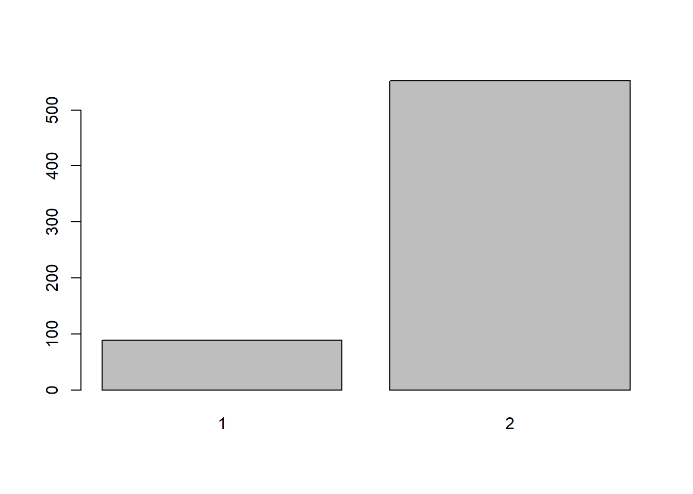
This will produce a bar chart displaying the frequency of each hypertension (hyp) category. You should see the chart appear in the plot window. The output might look like:
Note that this bar chart will appear in the plots window of RStudio but it will not be saved. To save the plot as an image file you can use the png() command like this.
png("practical2-plot1.png")
barplot(counts)
dev.off()png
2 This puts the output of the barplot() command into a png file named ‘practical2-plot1.png’, and then switches back to the RStudio plot viewer using dev.off(). The png file is saved to your working directory.
There are a few ways in which we could improve the bar chart. First, we should include axis labels and we might want to colour our bars. To do this we can use the code
barplot(
counts,
col = c("red", "blue"),
xlab = "Hypertension",
ylab = "Frequency"
)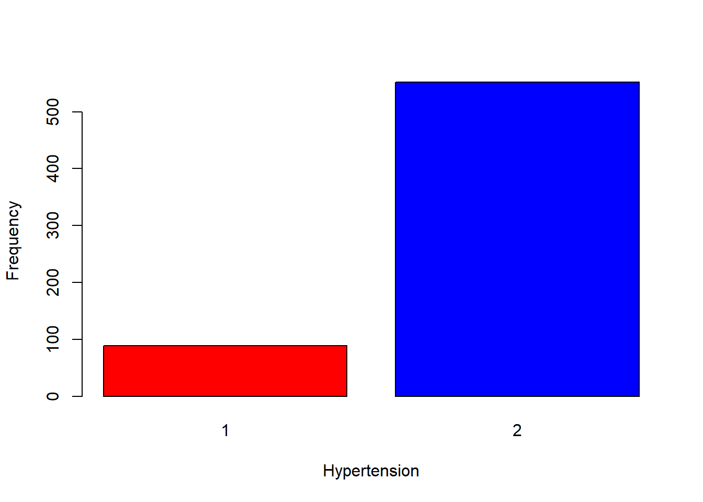
We may also want to generate a plot of the percentage of observations in each category of hypertension. To do this we must generate a percentage variable and plot it using the code below.
percent <- counts * 100 / sum(counts)
barplot(
percent,
col = c("red", "blue"),
xlab = "Hypertension",
ylab = "Percentage"
)
To obtain a histogram for a quantitative variable, use the hist() command. Try this for birthweight, type
hist(babies$bweight)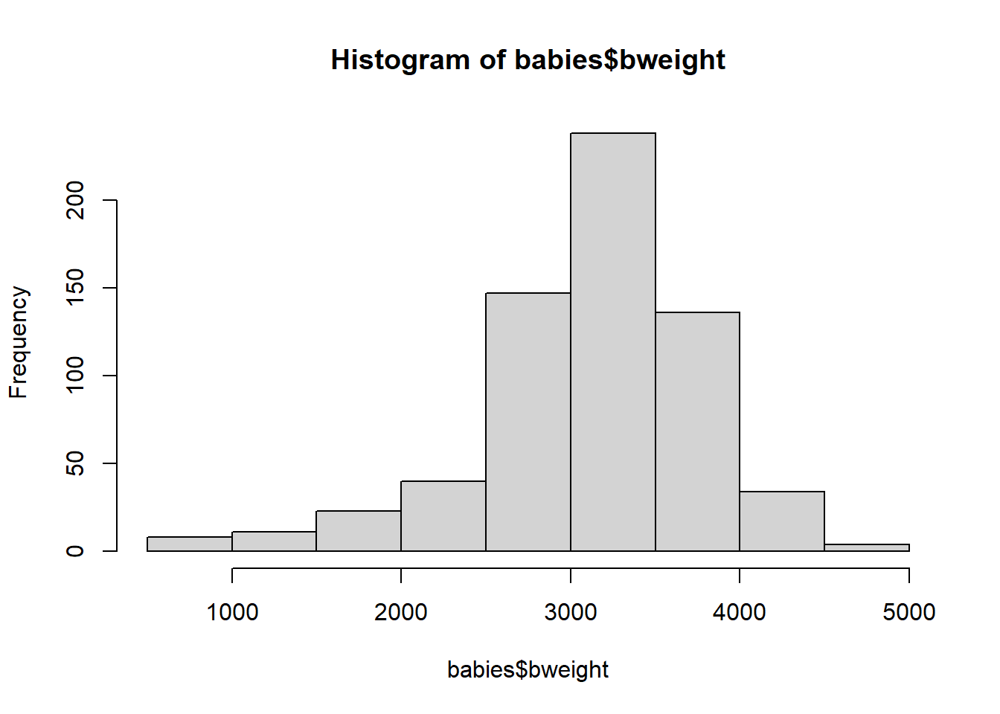
Again, there is room for improvement in this histogram. We use the breaks argument to specify the number of bars in our chart. We can also set the axis labels with xlab, like we did for our barplot
hist(
babies$bweight,
breaks = 5,
xlab = "Birthweight (g)"
)
hist() defaults to showing the frequency of observations in each interval. If we want to look at the probability density of observations in each bar (so the area of each bar relates to the number of observations), we can set the argument freq=FALSE.
hist(
babies$bweight,
breaks = 5,
xlab = "Birthweight (g)",
freq = FALSE
)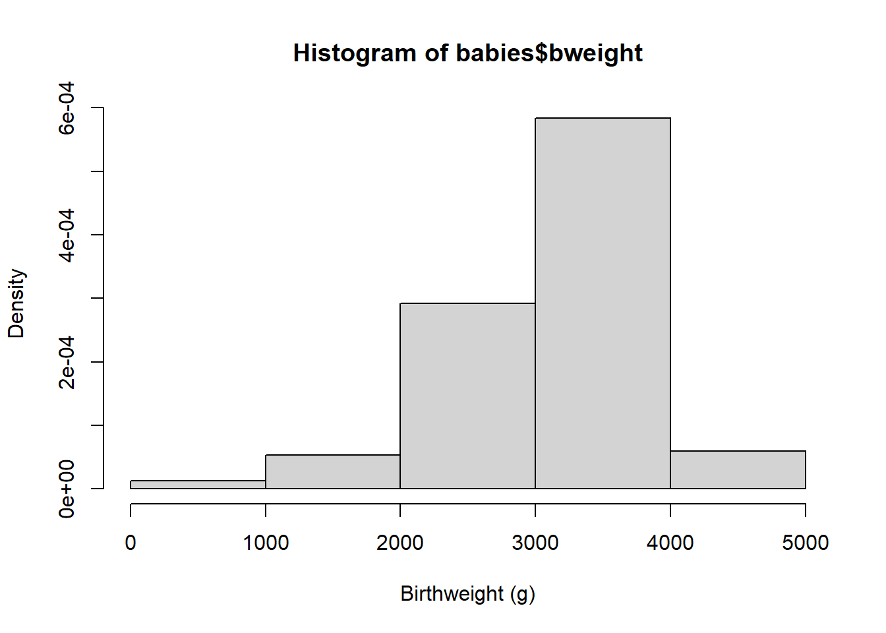
In this plot, the area of the bars reflects the number of observations in them. You can vary the number of bars in the histogram by adding, for example, breaks=12. Try
hist(
babies$bweight,
breaks = 12,
xlab = "Birthweight (g)",
freq = FALSE
)
You will notice that there are actually only 9 bars in the plot although we asked for 12 breaks. This is because when you specify a single number for breaks, the hist() function treats it as a suggestion. To control the number of bars more precisely you need to set a sequence of values for the breaks. We can make a sequence from the minimum bweight to maximum using seq(from=min(babies\(bweight), to=max(babies\)bweight), length.out=13) (Note, if there are 13 breaks there are 12 bars). So we can plot this
hist(
babies$bweight,
breaks = seq(
from = min(babies$bweight),
to = max(babies$bweight),
length.out = 13
),
xlab = "Birthweight (g)",
freq = FALSE
)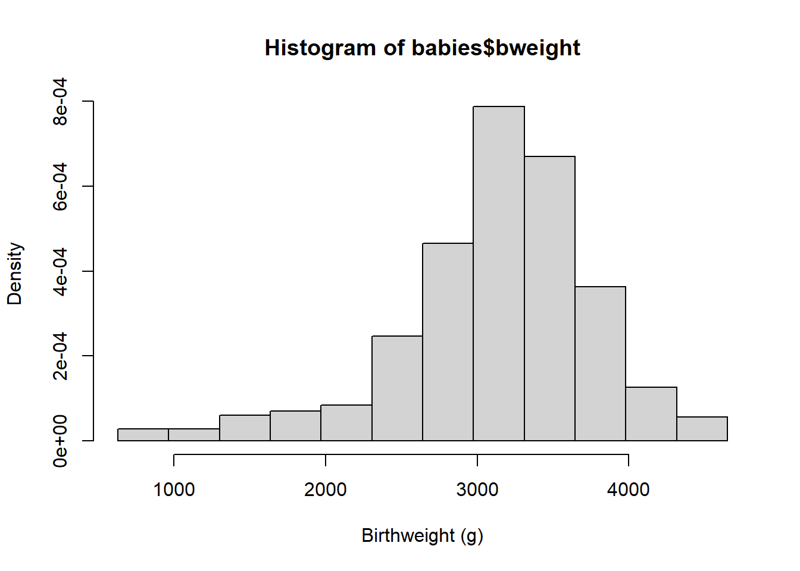
We can superimpose a normal curve on the plot using the function curve().
hist(
babies$bweight,
breaks = seq(
from = min(babies$bweight),
to = max(babies$bweight),
length.out = 13
),
xlab = "Birthweight (g)",
freq = FALSE
)
curve(
dnorm(x,
mean = mean(babies$bweight),
sd = sd(babies$bweight)
),
add = TRUE
)
dnorm() is a function that will generate a normal curve for a given mean and standard deviation. Specifying the argument add=TRUE in curve() means the normal curve is superimposed on our histogram, not put in a new plot.
For a histogram of continuous quantitative data that are recorded as discrete quantities (e.g. maternal age), we may want to specify the bin width as 1. To do this we can use another sequence from minimum to maximum maternal age: seq(from=min(babies\(matage), to=max(babies\)matage), by=1). Try the following:
hist(
babies$matage,
breaks = seq(
from = min(babies$matage),
to = max(babies$matage),
by = 1
),
xlab = "Maternal age (years)"
)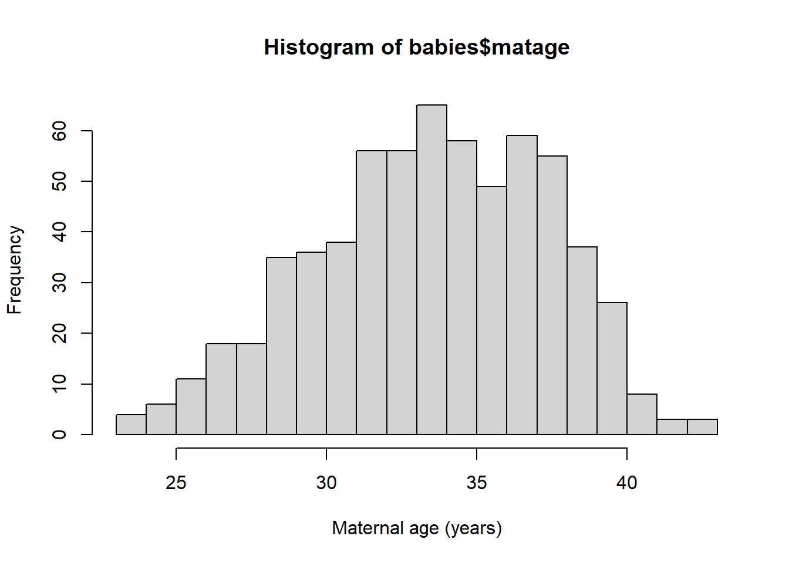
Notice the height of each bar now represents the frequency and not the density or the proportion in each group. To produce plots of cumulative distributions for quantitative data you can use the ecdf() function, which calculates the Empirical Cumulative Distribution Function.
plot(
ecdf(babies$bweight),
do.points = FALSE,
verticals = TRUE
)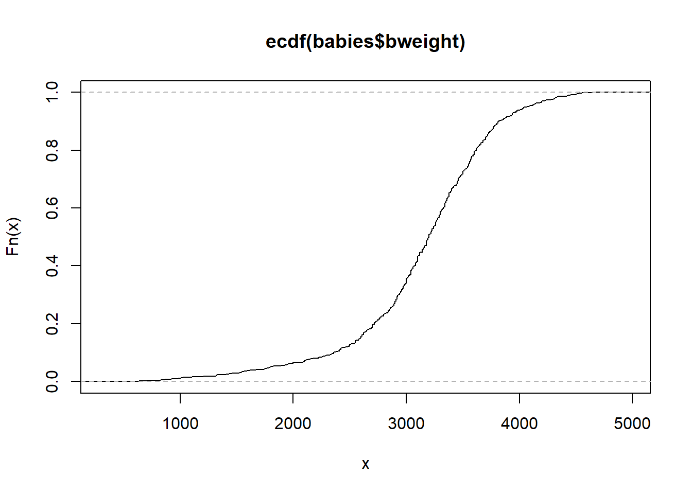
There are two arguments specified in plot() that change how the ECDF is displayed. What happens if you change them from TRUE to FALSE or vice versa? The smallest value for bweight is 630g (we can obtain this using the command min(babies$bweight). We can see the value of the ECDF curve for this value by typing
ecdf(babies$bweight)(630)[1] 0.001560062We see that for bweight=630, the value of the ECDF curve is 0.0015601 (that is 1/641, the number of babies in the dataset). You may wish to look at a few other values in this way.
To display a scatterplot of the relationship of the two continuous variables, we simply enter both variables in the plot command. Try this with birthweight and maternal age.
plot(
babies$matage,
babies$bweight,
xlab = "Maternal age (years)",
ylab = "Birthweight (g)"
)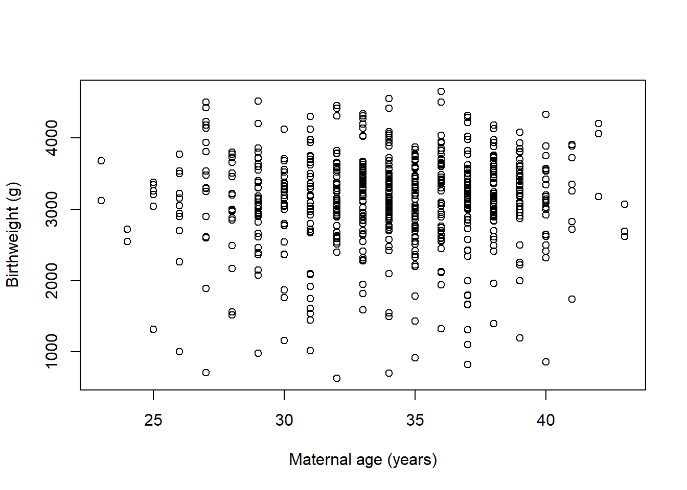
The scatter plot is used to help assess whether there appears to be an association between two quantitative variables, here birthweight and maternal age. This subject is discussed in greater detail in SC14 & SC15, and in the associated practical WB14/15.
Now use R to answer the following questions for the Babies dataset (the solutions are in Section 3). You will need to use the commands you learnt in Section 1.
Examine the data and determine the data type for each variable (eg. binary, nominal, ordered, quantitative discrete or continuous).
Produce frequency tables for sex and hypertension and use these to answer the following questions:
Obtain the mean, median and standard deviation for the three variables birthweight, maternal age and gestational age.
Produce a histogram for birthweight, maternal age and gestational age.
As mentioned before, the plots in this practical were produced with base R. You can also make them with ‘ggplot2’, a versatile data visualisation package loaded as part of tidyverse. While the code for plots seems a bit more complicated to start with, this means you can change them to suit your needs much more easily, and the results often look nicer than base R plots.
Before we start, it will be useful to specify in this section that hypertension is a factor, not a numeric variable. Converting hyp to a factor tells R that 0 and 1 are categories, not quantities.
babies$hyp<-as.factor(babies$hyp)When making graphs with ggplot2, we first tell the ggplot() command what data to use, and then add another line following a + symbol to specify the plot that we want. For example, to generate a bar plot we use the following code.
ggplot(babies, aes(x = hyp, fill = hyp)) +
geom_bar() +
theme(legend.position = "none") +
xlab("Hypertension")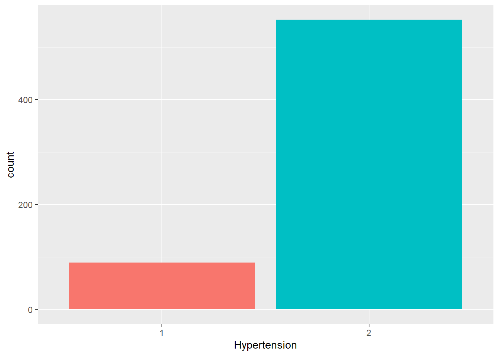
This tells ggplot() to use the babies data. The argument aes(x=hyp, fill=hyp) sets the variables we are using. In this case the x axis is set to refer to the hypertension variable, and the fill colour of the bars is too. The + symbol indicates there is more code added to this graph and geom_bar() makes a bar chart using the code. The line theme(legend.position=“none”) stops ggplot2 from putting a legend in the graph, as it is not needed here. The final line specifies the label on the x-axis.
ggplot performs some calculations and generates variables in the background while plotting. If we want to plot something more customised, like the percentage of mothers in each hypertension group, we can refer to these variables. For example, geom_bar() uses a variable ..count.. to represent the frequency of observations in each hypertension group, so we can specify that the variable y is a function of this.
ggplot(babies, aes(x = hyp, fill = hyp)) +
geom_bar(aes(y = after_stat(count * 100 / sum(count)))) +
theme(legend.position = "none") +
xlab("Hypertension") +
ylab("Percent")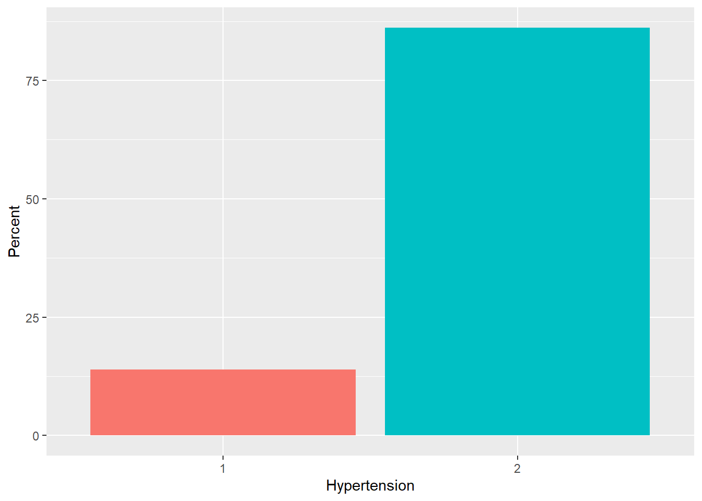
Note that we still set our calculated percentage as a variable in the graphy using aes(), just on a new line.
To make a histogram, we use a different “geom” function:
ggplot(babies, aes(x = bweight)) +
geom_histogram(bins = 12, colour = "black", fill = "white") +
ylab("Frequency") +
xlab("Birthweight (grams)")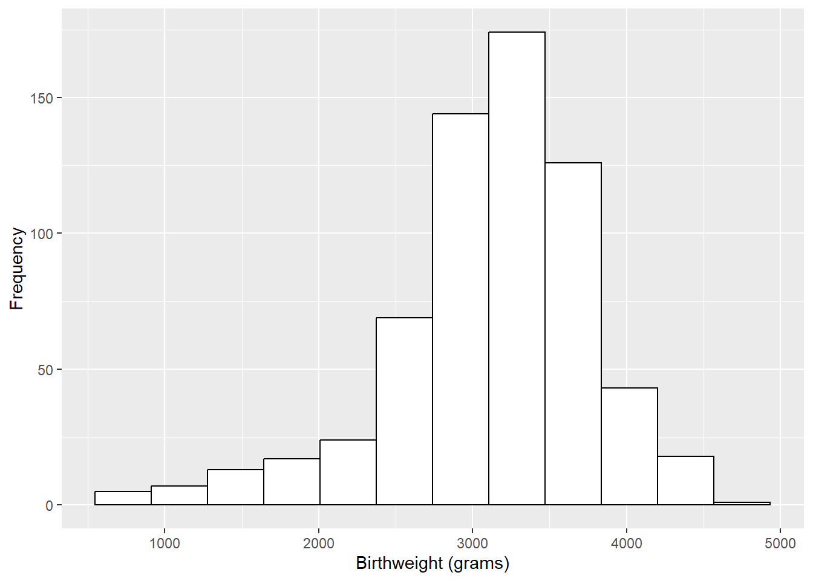
ggplot() will use the actual number of bars you specify using the bins argument! If you want it to represent density, you can use one of ggplot’s variables again, this time density.
ggplot(babies, aes(x = bweight)) +
geom_histogram(aes(y = after_stat(density)), bins = 12, colour = "black",
fill = "white") +
ylab("Frequency density") +
xlab("Birthweight (grams)")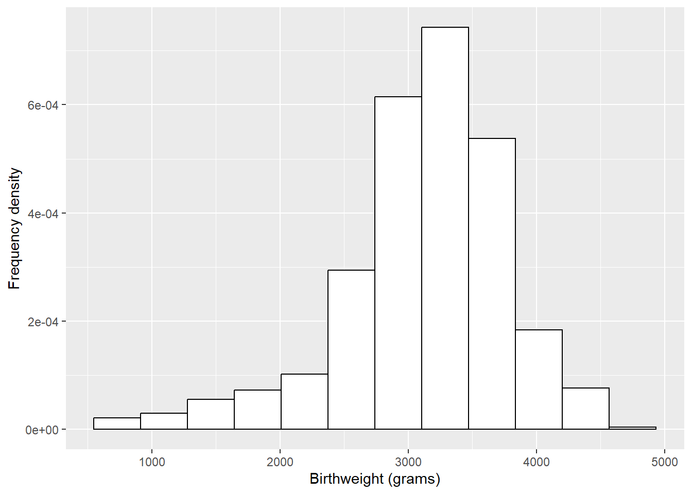
Both bar charts and histograms use “geom” functions in ggplot, but there are also “stat” functions which can compute statistics and plot them. One example is stat_ecdf() which plots the cumulative frequency curve.
ggplot(babies, aes(x = bweight)) +
stat_ecdf(geom = "line")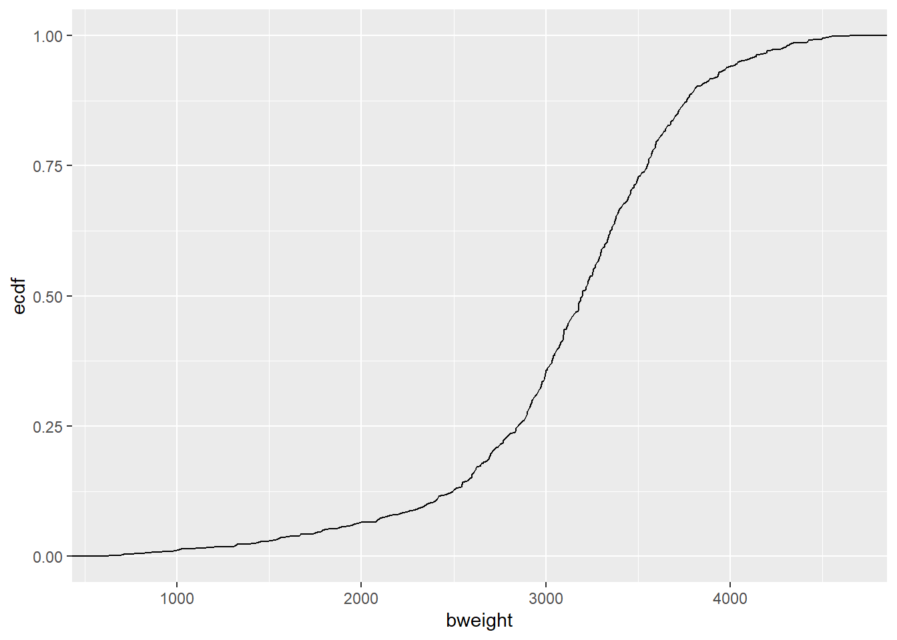
We use the argument geom=“line” to tell the function how to plots the ECDF – using a line. What happens if you change “line” to “step” or “point”? The final chart in the practical was a scatter chart. For this we need to specify both x and y variables in the aes() argument and use the function geom_point().
ggplot(babies, aes(x = matage, y = bweight)) +
geom_point()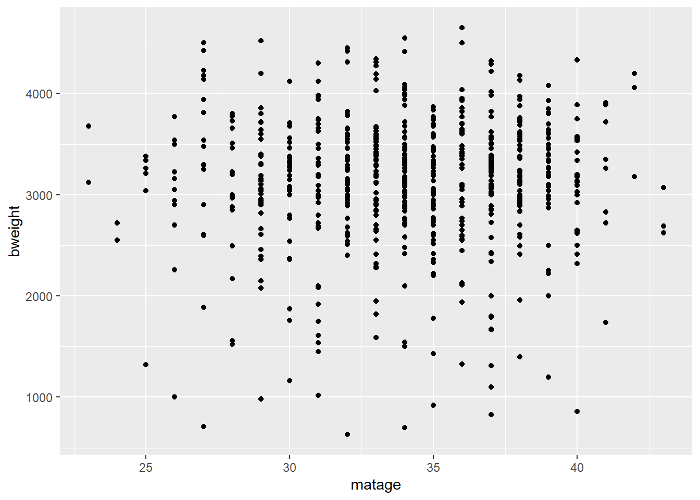
In this session you are going to use the Babies data to illustrate the material presented in the CAL session SE05. In “Introduction to R” and in the practical session WB02 you saw how to do the following:
| Task | R function |
|---|---|
| Import a csv file of data | import() |
| Group data in a tibble | group_by() |
| Summary of one variable or all variables in the dataset | summary() |
| Summarise data in a tibble | summarise() |
| Change a variable to a factor | as.factor() |
| Recode a variable | recode() |
| Make a categorical variable from continuous | cut() |
| Produce bar charts of categorical variables | barplot() |
| Produce histograms of continuous variables | hist() |
| Produce scatter points of one or two variables | plot() |
| Round the value to a specified number of decimal points | round() |
In this session, you will need to make use of the tidyverse and rio packages, which you should have installed whilst working through the “Introduction to R” online session. If you have not yet downloaded these, please return to this session to remind yourself of how to action this. Remember, to install packages we make use of the install.packages() function.
You should now load these packages. Recall from the “Introduction to R” online session, we type the following:
library(rio)
library(tidyverse)Import the babies dataset
babies<-import("babies.csv")The summarise() function can be used to calculate basic summary statistics like mean, median, standard deviation, minimum, maximum, or count of a variable. In the examples below, we are interested in summarising the birth weight of the babies in the population from which this sample was drawn. We can display their mean birth weight by typing
summarise(babies, mean = mean(bweight)) mean
1 3129.137You can calculate the standard deviation by typing
summarise(babies, sd = sd(bweight)) sd
1 652.7827Median, minimum, and maximum bweight can be summarised as below
summarise(babies, median = median(bweight)) #median birthweight median
1 3200summarise(babies, min = min(bweight), max = max(bweight)) min max
1 630 4650We can display the four statistics together by typing:
babies |>
summarise(mean = mean(bweight, na.rm = TRUE),
SD = sd(bweight, na.rm=TRUE), #na.rm=TRUE tells R to ignore missing values
median = median(bweight, na.rm = TRUE),
min = min(bweight, na.rm = TRUE),
max = max(bweight, na.rm = TRUE)) mean SD median min max
1 3129.137 652.7827 3200 630 4650We can also use the summary() function
summary(babies$bweight) Min. 1st Qu. Median Mean 3rd Qu. Max.
630 2850 3200 3129 3550 4650 This will display the min, max, first quantile, third quantile, mean, and median of bweight
We should then examine the distribution of bweight. We do this graphically with
hist(babies$bweight)
The distribution is fairly symmetrical, hence we can go ahead and compute the confidence interval for the sample mean using the methods based on the Normal or the t-distribution.
For the 95% confidence interval of the mean birth weight using the t-distribution, we use the output from a one sample t-test
t.test(babies$bweight)
One Sample t-test
data: babies$bweight
t = 121.36, df = 640, p-value < 2.2e-16
alternative hypothesis: true mean is not equal to 0
95 percent confidence interval:
3078.507 3179.767
sample estimates:
mean of x
3129.137 The symbol $ shows that we are referring to the bweight column of our babies tibble. This produces more output than we need. If we are just interested in the confidence interval, we can extract this from the t.test results by typing
t.test(babies$bweight)$conf.int[1] 3078.507 3179.767
attr(,"conf.level")
[1] 0.95This shows us just the confidence interval and the confidence level we used (in this case 0.95 indicates a 95% confidence interval). If we wished to have the 90% confidence intervals, we can use the argument conf.level=0.9 to specify that.
t.test(babies$bweight, conf.level = 0.9)$conf.int[1] 3086.666 3171.609
attr(,"conf.level")
[1] 0.9There are situations where we want to calculate a confidence interval but do not have direct access to the original data, but only to the sample size, the sample mean and the sample standard deviation. In R there is no function specifically for doing this, but we can calculate it using the formula:
\[ CI = \mu \pm 1.96 \times \frac{\theta}{\sqrt{n}} \]
For example, if we only knew that the sample was size 641, the sample mean was 3129.137g and the standard deviation 652.7827g, we could set them as objects in our R environment by typing
n <- 641
mean <- 3129.137
sd <- 652.7827We can then use these in the formula to calculate the 95% confidence interval
error <- 1.96 * sd / sqrt(n)
lower <- mean - error
upper <- mean + error
lower[1] 3078.602upper[1] 3179.672Note that the sqrt() function calculates the square root of the object in brackets.
We usually write the interval in brackets, with upper and lower values separated by a comma or the word “to”:
“The mean birth weight is 3129.137g, 95%CI(3078.507, 3179.767)”
Or
“The mean birth weight is 3129.137g, 95%CI(3078.507 to 3179.767)”
This tells us that we are ninety-five percent confident that the true population mean is included in the interval 3078.507g to 3179.767g. (Note that it is ok to present to fewer significant figures, as long as the rounding is done correctly for example we could round to 1dp to give 3078.5g to 3179.8g, or even 0dp to give 3079g to 3180g.)
If you would like to round the results to one decimal place, use the round() function:
lower <- round(lower, digits = 1)
upper <- round(upper, digits = 1)
lower[1] 3078.6upper[1] 3179.7The number 1.96 specifically calculates a 95% confidence interval; it represents the upper limit of the interval covering 95% of the standard normal distribution. If we wanted an 80% confidence interval we would have to use a different number. We can use the qnorm() function in R to calculate this and place it in our formula. For example, a 80% confidence interval covers from the 10th to 90th quantile of the standard normal distribution. We can calculate the value at the 90th quantile by typing.
qnorm(0.9)[1] 1.281552We can put this in our formula like this
error <- qnorm(0.9) * sd / sqrt(n)
lower <- mean - error
upper <- mean + error
lower[1] 3096.094upper[1] 3162.18An alternative, if you wish to use the t distribution, is to replace the function qnorm() with qt(). If we wanted to calculate many confidence intervals for the mean we might wish to speed this up by writing our own function. There is some information about how to do this in the “Extra R” section at the end of this practical.
If we wished to test the hypothesis that the mean birth weight of all babies was equal to 3200g, against the hypothesis that the mean was different from 3200g, we would type
The argument mu=3200 sets our null hypothesis that the mean is equal to 3200.
And the result would be:
t.test(babies$bweight, mu = 3200)
One Sample t-test
data: babies$bweight
t = -2.7484, df = 640, p-value = 0.006158
alternative hypothesis: true mean is not equal to 3200
95 percent confidence interval:
3078.507 3179.767
sample estimates:
mean of x
3129.137 This prints the p-value for a two-sided test in the output. If we want a one sided test, we should use the argument alternative=“less” or alternative=“greater” to specify our alternative hypothesis. For example,
t.test(babies$bweight, mu = 3200, alternative = "less")
One Sample t-test
data: babies$bweight
t = -2.7484, df = 640, p-value = 0.003079
alternative hypothesis: true mean is less than 3200
95 percent confidence interval:
-Inf 3171.609
sample estimates:
mean of x
3129.137 t.test(babies$bweight, mu = 3200, alternative = "greater")
One Sample t-test
data: babies$bweight
t = -2.7484, df = 640, p-value = 0.9969
alternative hypothesis: true mean is greater than 3200
95 percent confidence interval:
3086.666 Inf
sample estimates:
mean of x
3129.137 Note that R compares the test statistic with the t-distribution, not the Normal distribution, even when the sample size is large. As we know, when the degrees of freedom are as large as in this example, comparing the test statistics with the Normal distribution or with the t-distribution leads to the same conclusions.
Have a go on your own now (the solutions are in Section 3).
Import the Whitehall data set, whall10.csv, and familiarise yourself with the data. A brief description is in the Appendix.
How many records are held in the data set? Are there any missing values for the variables id, sbp and chol?
Compute the sample mean systolic blood pressure and its 95% confidence interval. Look at the distribution of systolic blood pressure to assess whether or not you think it is appropriate to use the mean in this case.
Do the same for cholesterol level.
Test whether the population systolic blood pressure (that is the systolic blood pressure of all civil servants in the UK) is equal to 135mmHg or different from 135mmHg. What is the P-value? How would you report the result?
Test whether the population cholesterol level is equal to 190mg/dl or different from 190mg/dl. What is the P-value? How would you report the result?
It is common for R users to write their own functions to automatically carry out calculations and operations they use a lot as this saves time. Functions are R objects, and to define them we must give them a name. For example:
confidence.interval <- function(){
}defines a function called confidence.interval(). If we want this to calculate a confidence interval for the mean using a normal distribution, we can add the equation we used earlier inside the curly brackets.
confidence.interval <- function(){
error <- qnorm(0.975) * sd / sqrt(n)
lower <- mean - error
upper <- mean + error
}For this to calculate the 95% confidence interval, we need to specify the mean (mean), standard deviation (sd) and sample size (n) when we run our function, so we add them as arguments by putting them in the brackets after the word function.
confidence.interval <- function(mean, sd, n){
error <- qnorm(0.975) * sd / sqrt(n)
lower <- mean - error
upper <- mean + error
lower
upper
}We also need to tell our function to send us the results (lower and upper) when it has calculated them. We do this by putting lower and upper in one vector called CI and using the function return() to set CI as the output of the function.
confidence.interval <- function(mean, sd, n){
error <- qnorm(0.975) * sd / sqrt(n)
lower <- mean - error
upper <- mean + error
CI <- c(lower, upper)
return(CI)
}Note that putting c() around numbers or objects separated by commas turns them into a vector.
This will now calculate a 95% confidence interval for a given mean, standard deviation and sample size like this:
confidence.interval(mean = 10, sd = 4, n = 100)[1] 9.216014 10.783986If we want to set a confidence limit, we can include this as an argument and use this to change the number 0.975 in our equation.
confidence.interval = function(mean, sd, n, conf.limit){
qnorm.input = 0.5 + 0.5 * conf.limit
error = qnorm(qnorm.input) * sd / sqrt(n)
lower = mean - error
upper = mean + error
CI = c(lower, upper)
return(CI)
}Note that we have added a line that calculates the appropriate quantile of the Normal distribution to input into qnorm().
Now we can calculate any confidence interval using a normal distribution.
confidence.interval(mean = 10, sd = 4, n = 100, conf.limit = 0.95)[1] 9.216014 10.783986confidence.interval(mean = 10, sd = 4, n = 100, conf.limit = 0.9)[1] 9.342059 10.657941confidence.interval(mean = 10, sd = 4, n = 100, conf.limit = 0.8)[1] 9.487379 10.512621In this session you are going to analyse paired and unpaired data collected on quantitative variables and practice what you learnt in CAL session SC06.
We will use two different data sets to learn how to deal with these two types of problems. The data sets are: (a) the skinfold measurements introduced in SC08 and, (b) the Babies data.
In this session, you will need to make use of the tidyverse and rio packages, which you should have installed whilst working through the “Introduction to R” online session. If you have not yet downloaded these, please return to this session to remind yourself of how to action this. Remember, to install packages we make use of the install.packages() function.
You should now load these packages. Recall from the “Introduction to R” online session, we type the following:
library(rio)
library(tidyverse)Import the skinfold dataset
skinf<-import("skinf.csv")The data file is called skinf.csv and is described in the Appendix. It consists of skinfold measurements (in mm) taken on 15 subjects on two occasions, during the harvest and the planting season, respectively. The measurements are described as “paired”, with each pair consisting of 2 measures of skinfold thickness for the same person taken at different times. The two measurements are called skin1 and skin2.
skinf |>
summarise(
mean_skin1 = mean(skin1),
med_skin1 = median(skin1),
mean_skin2 = mean(skin2),
med_skin2 = median(skin2)
) mean_skin1 med_skin1 mean_skin2 med_skin2
1 23.84667 20.8 21.56667 18.6Or type
summary(skinf$skin1); summary(skinf$skin2) Min. 1st Qu. Median Mean 3rd Qu. Max.
14.60 18.70 20.80 23.85 29.35 39.90 Min. 1st Qu. Median Mean 3rd Qu. Max.
14.00 16.60 18.60 21.57 26.25 34.60 The last command produces the output showing that the distribution of the two measurements are partly skewed, as the mean and median of each measure differ. The mean of skin1 is 23.8mm (rounded) and the median is 20.8mm. For skin2, the mean is 21.6mm and the median is 18.6mm.
We are interested in the mean difference between the two observations taken on each individual. In the last practical we used the function t.test() to view confidence intervals. We can do this with two samples, too, making sure to specify that the data are paired.
t.test(skinf$skin1, skinf$skin2, paired = TRUE)$conf.int[1] 1.031805 3.528196
attr(,"conf.level")
[1] 0.95Alternatively, we could generate a variable representing the difference between skin1 and skin2.
dif <- skinf$skin1 - skinf$skin2
mean(dif); median(dif)[1] 2.280001[1] 2Note that we examine the distribution of dif so that we can assess whether the distribution of the individual differences is symmetrical. In this case, the mean and median are not too different, considering the size of the sample. So, we proceed and compute a confidence interval for the mean difference using the properties of the t-distribution. The command is:
t.test(dif)$conf.int[1] 1.031805 3.528196
attr(,"conf.level")
[1] 0.95This gives the same result as before.
The interval should be written as follows:
“The mean difference in skin thickness between the 2 seasons is 2.28mm, 95%CI (1.03, 3.53)”
Therefore we are ninety-five percent confident that the interval 1.03mm to 3.52mm includes the true population mean difference.
If we wished to have the 90% confidence interval, we would use the argument conf.level
t.test(dif, conf.level = 0.9)$conf.int[1] 1.254976 3.305025
attr(,"conf.level")
[1] 0.9To view the results of the t-test, and test whether the population difference is equal to zero, we type
t.test(dif)
One Sample t-test
data: dif
t = 3.9177, df = 14, p-value = 0.001547
alternative hypothesis: true mean is not equal to 0
95 percent confidence interval:
1.031805 3.528196
sample estimates:
mean of x
2.280001 Like the previous practical, the results are for a 2-sided test. This can be modified using the alternative argument.
Alternatively, as the data are paired we may use the following command:
t.test(skinf$skin1, skinf$skin2, paired = TRUE)
Paired t-test
data: skinf$skin1 and skinf$skin2
t = 3.9177, df = 14, p-value = 0.001547
alternative hypothesis: true mean difference is not equal to 0
95 percent confidence interval:
1.031805 3.528196
sample estimates:
mean difference
2.280001 Compare the results of the 2 different approaches - they are identical!
Presentation of results should be along the following lines:
“A t-test shows strong evidence against the null hypothesis of no difference in skin thickness between the two seasons. (P=0.0015)”
Or less formally,
“There is strong evidence that in the population represented by our sample, difference in skin thickness between the two seasons is not 0 mm (P=0.0015)”
Finding a mean difference as great as 2.28 is very unlikely by chance, if the true mean difference in the population is 0mm. We are therefore inclined to believe that the true mean difference is not 0mm.
Note that the confidence interval and p-value are both derived from the standard error and size of difference, so are closely related. If a 95% confidence interval does not include the value specified in the null hypothesis, then the p-value obtained from a hypothesis test will be less than 0.05. Conversely, if a 95% confidence interval does include the value specified in the null hypothesis then the p-value obtained from a hypothesis test will be greater than 0.05. In the example above, the 95% confidence interval excludes 0mm and the significance test yields a p-value of less than 0.05. These two results virtually always go together.
To compare the mean values of a quantitative variable observed in two independent groups, we would first describe the data separately in the two groups. We will use the Babies data set again to demonstrate this. Type
babies<-import("babies.csv")In WB05, you learned how to use the summarise() function to summarise quantitative variables like birthweight. You calculated the mean, median, minimum, and maximum birthweight for the entire sample.
Now, we will take it a step further. Instead of just looking at the overall mean, we will compare the mean birthweight between different groups. To do this, we use the group_by() function which tells R to summarise the data by groups of a second variable. For example, if we wished to compare the birth weight of boys and girls, we would type
babies |>
group_by(sex) |>
summarise(Freq. = length(bweight),
mean = mean(bweight),
sd = sd(bweight),
median = median(bweight))# A tibble: 2 × 5
sex Freq. mean sd median
<int> <int> <dbl> <dbl> <dbl>
1 1 315 3044. 629. 3120
2 2 326 3211. 666. 3290The result consists of the sample means, their standard deviations and their medians, separately by sex of the infant. The comparison of means and medians allows us to assess whether the birth weight distribution is symmetrical in both groups. It appears to be so, as the mean and median are reasonably similar within each sex. We may then test the hypothesis that the population mean birth weights of all baby boys and baby girls are the same.
It is important to note that when using the t.test() command for two paired variables, the variables should be separated by a comma “,” while when we want to compare two groups (unpaired), the variables are separated by a tilde “~” with the grouping variable coming after the “~”.
t.test(babies$bweight ~ babies$sex)
Welch Two Sample t-test
data: babies$bweight by babies$sex
t = -3.2686, df = 638.65, p-value = 0.001139
alternative hypothesis: true difference in means between group 1 and group 2 is not equal to 0
95 percent confidence interval:
-267.57246 -66.73186
sample estimates:
mean in group 1 mean in group 2
3044.127 3211.279 These results may be interpreted as follows:
A t-test suggests strong evidence against the null hypothesis of no difference in birthweights between boys and girls (P=0.0011). On average boys in this sample are born weighing 167.15g less than girls with 95% confidence interval -267.57g to -66.73g. Therefore we are 95% certain that the population value for this difference lies between -267.57g and -66.73g.
Have a go on your own (the solutions are in Section 3).
The dataset called diabk.csv holds the data on 15 diabetic patients who were involved in an educational programme to improve their diet (see Appendix). Their average daily calories intake was measured one week before and one week after the intervention. The two measurements are called kcal1 and kcal2. Import and examine the data.
Compute the sample mean difference in calorie intake before and after the intervention, examine its distribution and then calculate its 95% confidence interval. Test whether the mean difference is equal to 0 kcal/day. Interpret your results and comment on any relationship between the P-value and the confidence interval.
Import into R the babies data (hint import is the command for importing the babies data into R). Compute separately the sample mean birthweight of babies born to mothers who suffered, or did not suffer, from hypertension during pregnancy. Obtain a 95% confidence interval for the mean difference in birthweight between the 2 groups and test whether the mean difference is equal to 0g. Report your results.
In this session you are going to use the Whitehall data to practice what you learnt in CAL session SE07. In sessions WB05 and WB06 you saw how to:
| Task | R function |
|---|---|
| Compute a confidence interval around a mean | t.test(x)conf.int |
| Test the hypothesis that the mean is equal to a given value | t.test(x) |
| Compute a confidence interval around a mean difference, | t.test(x,y, paired = T)$conf.int |
| obtained from paired data | |
| Test the hypothesis that the mean difference is equal to | t.test(x,y, paired=T) |
| zero | |
| Compute a confidenc interval around the difference | t.test(x~y) |
| between two independent means and test the hypothesis | |
| that they are |
Now you are going to use R to compute the confidence interval around a sample proportion and to test whether this proportion is equal to a specific value.
Load the packages required for this session
library(rio)
library(tidyverse)Import the Whitehall data
whitehall<-import("whall10.csv")We are interested in the proportion of current smokers among the sample of British civil servants. The variable smok holds the information about smoking. It is coded: 1=never; 2=ex-smoker; 3=1-14 cigs/day; 4=15-24 cigs/day; 5=25+ cigs/day. So, to find out the proportion of current smokers we need to generate a new variable, currsm, as follows:
whitehall <- whitehall |>
mutate(
currsm = case_when(
smok %in% c(1, 2) ~ 0,
smok %in% c(3, 4, 5) ~ 1,
TRUE ~ NA_real_
)
)The mutate() function generates a new column in the whitehall tibble which we have called currsm. We recoded the values of smok in order (from 1 to 5) as 0, 0, 1, 1 and 1 so never and ex-smokers are coded as 0, and current smokers of 1 or more cigarettes per day are coded as 1.
table(whitehall$smok,
whitehall$currsm,
useNA = "ifany"
)
0 1
1 317 0
2 646 0
3 0 310
4 0 279
5 0 125The last command should confirm that our instructions are correct.
In WB06, you learned how to use the group_by() and summarise() functions to compare the mean birth weight between groups when working with unpaired data.
Here, we will learn how to use the same approach to summarise binary variables. We will also introduce the mutate() function, which can add new columns to our summary table. In this case, we will use it to calculate the percentage of individuals in each group. Use the code below to summarise the proportion of current smokers using the following command:
whitehall |>
group_by(currsm) |>
summarise(freq = n()) |>
mutate(percent = 100 * freq / sum(freq)
)# A tibble: 2 × 3
currsm freq percent
<dbl> <int> <dbl>
1 0 963 57.4
2 1 714 42.6The last line of this command adds an extra column to our summary table, calculated from values of the freq column.
To compute the 95% confidence intervals for the proportion of current smokers, we need to input the information shown above into the binom.test() command:
binom.test(x = c(714,963))$conf.int[1] 0.4019444 0.4498364
attr(,"conf.level")
[1] 0.95Where x is a vector of the number of current and then not-current smokers.
The proportion of current smokers is 0.43, 95%CI (0.40,0.45). Alternatively we can say that the percentage of current smokers is 43%, 95% CI (40%, 45%). We are 95% confident that the interval 40% to 45% includes the population proportion of current smokers.
If we wished to have the 90% confidence intervals, we would type,
binom.test(x = c(714,963),
conf.level = 0.9)$conf.int[1] 0.4057092 0.4460040
attr(,"conf.level")
[1] 0.9If we want to do this without directly inputting the data, we can use a pipeline
binom.test(x = (whitehall |>
group_by(currsm) |>
summarise(freq = n()))$freq[2:1])
Exact binomial test
data: (summarise(group_by(whitehall, currsm), freq = n()))$freq[2:1]
number of successes = 714, number of trials = 1677, p-value = 1.305e-09
alternative hypothesis: true probability of success is not equal to 0.5
95 percent confidence interval:
0.4019444 0.4498364
sample estimates:
probability of success
0.4257603 This takes the frequencies of current smokers and non-smokers from the summary table and adds them as arguments to the binom.test() command. It obtains the same results as before.
If we wished to test the hypothesis that the proportion of current smokers was 40%, against the hypothesis that it was different from 40%, we would type, and then read the P-value from the output.
prop.test(x = 714,
n = 714 + 963,
p = 0.4,
correct = FALSE)
1-sample proportions test without continuity correction
data: 714 out of 714 + 963, null probability 0.4
X-squared = 4.6369, df = 1, p-value = 0.03129
alternative hypothesis: true p is not equal to 0.4
95 percent confidence interval:
0.4022912 0.4495687
sample estimates:
p
0.4257603 We conclude that there is some evidence (p=0.0321) to suggest that in the population from which our sample was taken, the population of current smokers is not equal to 0.4
Have a go on your own now (the solutions are in Section 3).
Using the Whitehall data examine the proportion of civil servants who had systolic blood pressure lower than 120mmHg. First look at the observations in the variable sbp, which represents systolic blood pressure, to make sure there are no strange or missing values. Then generate a variable called lowsbp that tells us if blood pressure is lower than 120mmHg.
Compute the 95% confidence interval for the proportion of civil servants with low SBP, and test the hypothesis that the proportion of civil servants with low SBP is 20%. Interpret your results.
Now generate a variable called highsbp which equals 1 if blood presure is greater than or equal to 160mmHg.
Compute the 95% confidence interval for the proportion of civil servants with high SBP, and test the hypothesis that the proportion of civil servants with high SBP is 10%. Interpret your results.
In this session you are going to compare proportions in two independent samples to practice what you learnt in CAL session SE08.
You will use the Whitehall data again and compare the proportion of current smokers in civil servants with different employment grades. The employment grade information is held in the variable called grade and is classified as: 1= high grade (i.e., administrative), 2=low grade (i.e., clerical).
Load the packages required for this session
library(rio)
library(tidyverse)
library(gmodels)Import the Whitehall data.
whitehall <- import("whall10.csv")In this dataset the variable smoke indicates the smoking status of study subjects, indicating how many cigarettes they currently smoke a day, or if they are former smokers or have never smoked. We use the following command to look at the distribution of smoke:
whitehall |>
group_by(smok) |>
summarise(freq = n()) |>
mutate(percent = 100 * freq / sum(freq))# A tibble: 5 × 3
smok freq percent
<int> <int> <dbl>
1 1 317 18.9
2 2 646 38.5
3 3 310 18.5
4 4 279 16.6
5 5 125 7.45To investigate current smokers with never/ex smokers we need to generate a new variable. Do you remember how to do it? If not, follow the instructions below.
To generate the variable that holds the information on “current smoking” status we do the following:
whitehall <- whitehall |>
mutate(
currsm = case_when(
smok %in% c(1, 2) ~ 0,
smok %in% c(3, 4, 5) ~ 1,
TRUE ~ NA_real_
)
)Re-level categories
whitehall$currsm = factor(
whitehall$currsm,
levels = c(1,0)
)So, for never and ex-smokers (for which smok = 1 or 2) the variable currsm takes the value of 0, and for smokers of one or more cigarettes per day the variable currsm takes the value of 1.
Again, it is a good idea to check that our new variable, currsm, is coded as intended:
table(whitehall$smok, whitehall$currsm)
1 0
1 0 317
2 0 646
3 310 0
4 279 0
5 125 0Yes! It looks like the values of currsm do correspond to the values of smok, as intended.
We are interested in the difference between the proportion of current smokers observed in High and Low employment grade. We can use CrossTable() function
CrossTable(whitehall$currsm,
whitehall$grade,
prop.r = FALSE,
prop.c = TRUE,
prop.t = FALSE,
prop.chisq = FALSE)
Cell Contents
|-------------------------|
| N |
| N / Col Total |
|-------------------------|
Total Observations in Table: 1677
| whitehall$grade
whitehall$currsm | 1 | 2 | Row Total |
-----------------|-----------|-----------|-----------|
1 | 436 | 278 | 714 |
| 0.365 | 0.576 | |
-----------------|-----------|-----------|-----------|
0 | 758 | 205 | 963 |
| 0.635 | 0.424 | |
-----------------|-----------|-----------|-----------|
Column Total | 1194 | 483 | 1677 |
| 0.712 | 0.288 | |
-----------------|-----------|-----------|-----------|
36.5% of high grade (grade = 1) civil servants and 57.6% of low grade (grade = 2) civil servants are current smokers.
Note that we use the prop.c=TRUE option to obtain column percentages, since we want the percentage of current smokers in each employment group.
We are interested in the difference between the proportions of current non-smokers among High and Low employment grade. We can use the prop.test() function on a 2x2 table to obtain the difference in proportions, its 95% confidence interval and the test of whether the two proportions are different.
table(whitehall$grade,
whitehall$currsm) |>
prop.test(conf.level = 0.95,
correct = FALSE)
2-sample test for equality of proportions without continuity correction
data: table(whitehall$grade, whitehall$currsm)
X-squared = 62.272, df = 1, p-value = 2.991e-15
alternative hypothesis: two.sided
95 percent confidence interval:
-0.2622633 -0.1585572
sample estimates:
prop 1 prop 2
0.3651591 0.5755694 The sample difference in the proportion of non-smokers between high and low grade is -0.21 with 95% confidence interval (-0.26 to -0.16). That is the sample proportion (or percentage) of current smokers is 0.21 (or 21%) less among the high grade civil servants than among the low grade civil servants. In the population of civil servants we are 95% certain that this difference lies between 0.16 and 0.26. The chi-squared test suggests strong evidence against the null hypothesis of no difference in proportion of current smokers between high and low grade civil servants (P<0.001).
If we wished to have 90% confidence intervals, we would type,
table(whitehall$grade, whitehall$currsm) |>
prop.test(conf.level = 0.9, correct = FALSE)
2-sample test for equality of proportions without continuity correction
data: table(whitehall$grade, whitehall$currsm)
X-squared = 62.272, df = 1, p-value = 2.991e-15
alternative hypothesis: two.sided
90 percent confidence interval:
-0.2539267 -0.1668938
sample estimates:
prop 1 prop 2
0.3651591 0.5755694 We can obtain the Z statistic by typing
sqrt(
prop.test(
table(
whitehall$grade,
whitehall$currsm
),
correct = FALSE
)$statistic
)X-squared
7.891269 Have a go on your own now (the solutions are in Section 3).
Examine whether the proportion of current smokers differs between civil servants with or without high systolic blood pressure. To do this you will need to create again the variable highsbp (see exercises for WB09).
Compute the 90% confidence interval for the difference in these proportions and test whether the difference is equal to zero.
Import the Mwanza dataset into R. This is an unmatched case-control study of HIV infection in women living in Mwanza, Tanzania. A short description is in the Appendix.
Examine the distribution of the variable npa, number of life-time sexual partners and of the variable case, the case/control indicator. (Hint: make sure you understand the coding of npa before you go on to Q5!)
Create a new variable called np5, for “At least 5 sexual partners”.
Compare this proportion of women who had at least 5 sexual partners separately in cases and controls. Compute the 95% confidence interval for the difference in these proportions. Are they significantly different? Interpret your results.
In this session you are going to use R to examine the association between two categorical variables. The statistical methods to do this are discussed in CAL session SE09.
The data you will use is called mwanza.csv. The data is from a study of risk factors for HIV infection in women in Mwanza, Tanzania. Details of the study are given in the Appendix.
Load the packages required for this session
library(rio)
library(tidyverse)
library(gmodels)Import the Mwanza data.
mwanza<-import("mwanza.csv")Examine the variables in the dataset.
summary(mwanza) idno comp case age1
Min. : 112041 Min. : 1.000 Min. :0.0000 Min. :1.000
1st Qu.: 477018 1st Qu.: 4.000 1st Qu.:0.0000 1st Qu.:2.000
Median : 753013 Median : 7.000 Median :0.0000 Median :3.000
Mean : 743214 Mean : 6.979 Mean :0.2477 Mean :3.448
3rd Qu.:1043063 3rd Qu.:10.000 3rd Qu.:0.0000 3rd Qu.:5.000
Max. :1284019 Max. :12.000 Max. :1.0000 Max. :6.000
ed eth rel msta
Min. :1.000 Min. :1.000 Min. :1.000 Min. :1.000
1st Qu.:1.000 1st Qu.:1.000 1st Qu.:2.000 1st Qu.:1.000
Median :2.000 Median :1.000 Median :3.000 Median :1.000
Mean :2.098 Mean :1.539 Mean :2.708 Mean :1.482
3rd Qu.:3.000 3rd Qu.:2.000 3rd Qu.:3.000 3rd Qu.:1.000
Max. :4.000 Max. :9.000 Max. :9.000 Max. :9.000
bld inj skin fsex
Min. :1.000 Min. :1.000 Min. :1.000 Min. :1.000
1st Qu.:1.000 1st Qu.:1.000 1st Qu.:1.000 1st Qu.:2.000
Median :1.000 Median :2.000 Median :2.000 Median :2.000
Mean :1.055 Mean :2.334 Mean :1.561 Mean :2.666
3rd Qu.:1.000 3rd Qu.:3.000 3rd Qu.:2.000 3rd Qu.:2.000
Max. :9.000 Max. :9.000 Max. :9.000 Max. :9.000
npa pa1 usedc ud
Min. :1.000 Min. :1.000 Min. :1.000 Min. :1.000
1st Qu.:1.000 1st Qu.:2.000 1st Qu.:1.000 1st Qu.:1.000
Median :2.000 Median :2.000 Median :1.000 Median :1.000
Mean :2.269 Mean :2.072 Mean :1.051 Mean :1.194
3rd Qu.:3.000 3rd Qu.:2.000 3rd Qu.:1.000 3rd Qu.:1.000
Max. :9.000 Max. :9.000 Max. :9.000 Max. :9.000
ark srk
Min. :1.000 Min. :1.000
1st Qu.:2.000 1st Qu.:1.000
Median :2.000 Median :2.000
Mean :2.274 Mean :2.199
3rd Qu.:3.000 3rd Qu.:3.000
Max. :4.000 Max. :4.000 The summary() function is a quick way to explore the characteristics of all variables in your dataset. It produces a summary table with one column per variable and one row per statistic, including the minimum, 1st quartile, median, mean, 3rd quartile, and maximum for each variable.Display and interpretation of a two way table
First you are going to examine the relationship between marital status (msta) and the number of sexual partners in the past year (pa1).
The variable msta is coded as follows: 1=currently married, 2=divorced or widowed, 3= never married, 9=information missing.
The variable pa1 is coded as follows: 1=no sexual partner in last year, 2=1 sexual partner, 3=2 sexual partners, 4=3 or 4 sexual partners, 5=5 or more sexual partners in last year, 9=information missing.
It would be useful for R to know this information, so we can add it to the variables as labels using the factor() function. The variables are converted to factors so that R treats the levels as categories rather than numerical values. This helps produce appropriate summaries and tables. Labels are added to make the results easier to read.
To make the variables msta and pa1 factors and apply the labels, type
mwanza$msta <- factor(
mwanza$msta,
levels = c(1,2,3,9),
labels = c("currently married",
"divorced or widowed",
"never married",
"information missing")
)mwanza$pa1<-factor(
mwanza$pa1,
levels=c(1,2,3,4,5,9),
labels=c("no sexual partner in last year",
"1 sexual partner",
"2 sexual partners",
"3 or 4 sexual partners",
"5 or more sexual partners in last year",
"information missing")
)Use the table() function to obtain a two way table of marital status by number of sexual partners in the past year.
table(mwanza$pa1, mwanza$msta)
currently married divorced or widowed
no sexual partner in last year 9 32
1 sexual partner 519 42
2 sexual partners 45 9
3 or 4 sexual partners 20 2
5 or more sexual partners in last year 0 0
information missing 0 1
never married information missing
no sexual partner in last year 27 6
1 sexual partner 29 8
2 sexual partners 4 5
3 or 4 sexual partners 4 0
5 or more sexual partners in last year 0 0
information missing 1 0To exclude the missing categories coded as “information missing”, you can use the recode_factor() function. This replaces the “information missing” category with NA while keeping the variable as a factor.
mwanza$msta <- recode_factor(
mwanza$msta,
"information missing" = NA_character_
)
mwanza$pa1 <- recode_factor(
mwanza$pa1,
"information missing" = NA_character_
)Alternatively, you can use the na_if() function from dplyr, which directly converts the specified value to NA and works for factors and characters.
mwanza <- mwanza |>
mutate(
msta = na_if(msta, "information missing"),
pa1 = na_if(pa1, "information missing")
)Now use the table() function again.
table(mwanza$pa1, mwanza$msta)
currently married divorced or widowed
no sexual partner in last year 9 32
1 sexual partner 519 42
2 sexual partners 45 9
3 or 4 sexual partners 20 2
5 or more sexual partners in last year 0 0
never married
no sexual partner in last year 27
1 sexual partner 29
2 sexual partners 4
3 or 4 sexual partners 4
5 or more sexual partners in last year 0To examine whether the distribution of individuals in categories of sex partners in the past year is the same for each category of marital status we can use CrossTable().
CrossTable(mwanza$pa1,
mwanza$msta,
prop.r = FALSE,
prop.c = TRUE,
prop.t = FALSE,
prop.chisq = FALSE)
Cell Contents
|-------------------------|
| N |
| N / Col Total |
|-------------------------|
Total Observations in Table: 742
| mwanza$msta
mwanza$pa1 | currently married | divorced or widowed | never married | Row Total |
-------------------------------|---------------------|---------------------|---------------------|---------------------|
no sexual partner in last year | 9 | 32 | 27 | 68 |
| 0.015 | 0.376 | 0.422 | |
-------------------------------|---------------------|---------------------|---------------------|---------------------|
1 sexual partner | 519 | 42 | 29 | 590 |
| 0.875 | 0.494 | 0.453 | |
-------------------------------|---------------------|---------------------|---------------------|---------------------|
2 sexual partners | 45 | 9 | 4 | 58 |
| 0.076 | 0.106 | 0.062 | |
-------------------------------|---------------------|---------------------|---------------------|---------------------|
3 or 4 sexual partners | 20 | 2 | 4 | 26 |
| 0.034 | 0.024 | 0.062 | |
-------------------------------|---------------------|---------------------|---------------------|---------------------|
Column Total | 593 | 85 | 64 | 742 |
| 0.799 | 0.115 | 0.086 | |
-------------------------------|---------------------|---------------------|---------------------|---------------------|
We can read from the table that 45.3% of those who never married reported one sexual partner in the past year, compared with 87.5 % of those who are married and 49.5% of those widowed or divorced.
If there was no association between the two variables the percentage reporting one sexual partner in the past year in each category of marital status would be similar, but they are not. Similarly the percentage of those with no sexual partners among those who are currently married it is 1.52%, 37.7% amongst those who are divorced or widowed and rises to 42.19% amongst those who have never married. This suggests there is an association between marital status and number of sexual partners in the past year.
You can test the null hypothesis of no association with a chi-squared test using the chisq.test() function on the two categorical variables pa1 and msta. We specify correct=F because this stops R from performing a continuity correction.
chisq.test(mwanza$pa1, mwanza$msta, correct = FALSE)
Pearson's Chi-squared test
data: mwanza$pa1 and mwanza$msta
X-squared = 215.92, df = 6, p-value < 2.2e-16We then see results from the chi-squared test. The degrees of freedom is also listed, calculated as df=(r-1)×(c-1)=(4-1)×(3-1)=6. The corresponding P-value or probability associated with the chi-squared value for 6 degrees of freedom is <2.2e-16. This is the way R represents standard form. It means 2.2×10^(-16). The result means that the probability of a chi-squared value this large, or larger, assuming the null hypothesis of no association is true, is very very small (<0.0001).
How is this result interpreted? The probability of obtaining a chi-squared value of this magnitude, assuming the null hypothesis of no association between marital status and the number of sexual partners in the past year is extremely small. We conclude that there is strong evidence to suggest a real association between marital status and number of sexual partners in the past year (p<0.0001).
You can use the same commands for the association between two binary variables. For this example we will use bld (blood transfusion in the last 5 years: 1=no, 2=yes, 9=missing) and case (a variable to indicate case/control status: 1= case, 0=control). We wish to compare the percentage of cases (of HIV infection) and controls who have had a blood transfusion in the past 5 years.
First we want to label the blood and case variables
mwanza$bld <- factor(
mwanza$bld,
levels = c(1,2,9),
labels = c("no","yes","missing")
)
mwanza$case <- factor(
mwanza$case,
levels = c(0,1),
labels = c("control","case")
)And then look at the distribution of bld
mwanza |>
group_by(bld) |>
summarise(freq = n()) |>
mutate(percent = 100 * freq / sum(freq))# A tibble: 3 × 3
bld freq percent
<fct> <int> <dbl>
1 no 728 95.4
2 yes 34 4.46
3 missing 1 0.131Next we need to code as missing those observations for which bld takes the value of 9:
mwanza$bld<-recode_factor(mwanza$bld, "missing" = NA_character_)To examine the distribution of bld in case and control groups, use the following commands:
CrossTable(mwanza$bld,
mwanza$case,
prop.r = FALSE,
prop.c = TRUE,
prop.t = FALSE,
prop.chisq = FALSE)
Cell Contents
|-------------------------|
| N |
| N / Col Total |
|-------------------------|
Total Observations in Table: 762
| mwanza$case
mwanza$bld | control | case | Row Total |
-------------|-----------|-----------|-----------|
no | 553 | 175 | 728 |
| 0.965 | 0.926 | |
-------------|-----------|-----------|-----------|
yes | 20 | 14 | 34 |
| 0.035 | 0.074 | |
-------------|-----------|-----------|-----------|
Column Total | 573 | 189 | 762 |
| 0.752 | 0.248 | |
-------------|-----------|-----------|-----------|
We can then use a chi-squared test on the 2x2 table
chisq.test(mwanza$bld, mwanza$case, correct=F)
Pearson's Chi-squared test
data: mwanza$bld and mwanza$case
X-squared = 5.1153, df = 1, p-value = 0.02372From the table you can see that more than 7% of the cases had a blood transfusion in the past 5 years compared to 3.5% of the controls. The resulting chi-squared value from the analysis is 5.12 (with 1df) with P-value 0.02. This means that the probability of obtaining a chi-squared value of this magnitude or larger by chance alone is small, at P=0.02. Therefore there is evidence to suggest that there is a real association between blood transfusion in the past 5 years and case/control status.
For ordered categorical data we can assess whether there is a linear relationship with a binary variable.
To see whether the proportion of cases varies by number of sexual partners in the past year, type the following.
CrossTable(mwanza$pa1,
mwanza$case,
prop.r = TRUE,
prop.c = FALSE,
prop.t = FALSE,
prop.chisq = FALSE)
Cell Contents
|-------------------------|
| N |
| N / Row Total |
|-------------------------|
Total Observations in Table: 761
| mwanza$case
mwanza$pa1 | control | case | Row Total |
-------------------------------|-----------|-----------|-----------|
no sexual partner in last year | 56 | 18 | 74 |
| 0.757 | 0.243 | 0.097 |
-------------------------------|-----------|-----------|-----------|
1 sexual partner | 461 | 137 | 598 |
| 0.771 | 0.229 | 0.786 |
-------------------------------|-----------|-----------|-----------|
2 sexual partners | 42 | 21 | 63 |
| 0.667 | 0.333 | 0.083 |
-------------------------------|-----------|-----------|-----------|
3 or 4 sexual partners | 14 | 12 | 26 |
| 0.538 | 0.462 | 0.034 |
-------------------------------|-----------|-----------|-----------|
Column Total | 573 | 188 | 761 |
-------------------------------|-----------|-----------|-----------|
We can then use a chi-squared test to test the association between case/control status and number of sexual partners in the past year.
chisq.test(table(mwanza$pa1, mwanza$case)[1:4,])
Pearson's Chi-squared test
data: table(mwanza$pa1, mwanza$case)[1:4, ]
X-squared = 9.9938, df = 3, p-value = 0.01862Look at the percentages of cases in each category of sexual partners. The proportion of cases in those who did not have a partner in the past year and those who had one partner is similar (24% and 23% respectively). There is a sharp increase in the proportion of cases with 2 sexual partners in the past year (33%) and another increase for 3 or 4 sexual partners in the past year (46%). The chi-squared test shows there is evidence of an association between cases and number of sexual partners in the past year, as P=0.02.
The test we have just performed in R is test of association between case/control status and number of sexual partners in the past year. To test whether the risk of HIV infection changes with an increasing number of sexual partners we use a test for linear trend. In a test for trend each category is assigned a score. For this example number of sexual partners has already been assigned a score: 1=none, 2=1, 3=2, 4=3-4, 5=5 or more.
In R, we must first generate two variables:
The number of cases for each pa1 category.
The total number of observations in each pa1 category.
We can do this by generating a summary table and saving it as an object.
summary<-mwanza |>
drop_na(case, pa1) |> # remove rows with missing case or pa1 values
filter(pa1 != 9) |> # exclude rows where pa1 = 9 ("information missing")
group_by(case, pa1)|>
summarise(freq=n())|>
group_by(pa1)|>
mutate(total=sum(freq))|> # add total (cases + controls) for each pa1
as.data.frame() # convert to data frame
# View the summary table
print(summary) case pa1 freq total
1 control no sexual partner in last year 56 74
2 control 1 sexual partner 461 598
3 control 2 sexual partners 42 63
4 control 3 or 4 sexual partners 14 26
5 case no sexual partner in last year 18 74
6 case 1 sexual partner 137 598
7 case 2 sexual partners 21 63
8 case 3 or 4 sexual partners 12 26Then we can select the parts of this we want using subsetting. Subsetting is selecting the particular rows and columns of a table that you are interested. To do this we put square brackets after the object we are subsetting and in them we specify the rows and columns of interest, separated by a comma. To select the frequency of cases in each pa1 category we want to select rows 5-8 and column 3 of our table and assign it to a new object. Note that subsetting does not always work well with tibbles, used in tidyverse, so the last line of the previous command converts our result into a data frame.
freq <- summary[5:8,3]Alternatively we can use a logical equation to specify that we are interested in the rows where case is equal to “case”.
freq <- summary[summary$case == "case",3]We can do the same for the total in each group, listed in the fourth column.
total <- summary[summary$case == "case",4]After which we use the prop.trend.test() command on the freq and total objects to test for linear trend.
prop.trend.test(freq, total)
Chi-squared Test for Trend in Proportions
data: freq out of total ,
using scores: 1 2 3 4
X-squared = 6.4081, df = 1, p-value = 0.01136or alternatively:
contingency_table <- table(mwanza$pa1, mwanza$case) # create a contingency table (cross-tabulation) of pa1 (rows) by case status (columns)
view(contingency_table)
categories <- as.character(1:4) # select only the categories 1, 2, 3, and 4 of pa1. These are the ordered groups we want in the trend test.
print(categories)
freq <- contingency_table[categories, "1"] # extract the number of cases (column "1") for the selected pa1 categories
total <- rowSums(contingency_table[categories, ]) # calculate the total number of people (cases + control) in each pa1 category
prop.trend.test(freq, total) # perform the test for linear trend in proportions across the ordered categoriesAlternatively, we can remove the pa1 == 9 category before creating the contingency table. This way the table contains only the categories needed for the test, so there is no need to filter rows later. We can then pass the counts of cases and the totals straight into prop.trend.test() without creating extra variables.
contingency_table_2 <- table(
mwanza$pa1[mwanza$pa1 != 9],
mwanza$case[mwanza$pa1 != 9]) # create a contingency table of pa1 (rows) by case status (columns), excluding pa1 = 9
# Perform the linear trend test directly
prop.trend.test(
contingency_table_2[, "1"], # number of cases in each pa1 category (cases = column 1 of contingency_table_2)
rowSums(contingency_table_2) # total people (cases + controls) in each category
) The chi-squared test for trend yields a value of 6.40, which with 1df, gives a p-value of 0.0114. We conclude that there is strong evidence of a linear trend, with the proportion of cases of HIV infection increasing with increasing number of sexual partners.
Now use R to answer the following questions for the Mwanza dataset (the solutions are in Section 3). In doing this you will apply the statistical methods for assessing the association between two categorical variables discussed in CAL session SC11.
Examine the relationship and test for an association between the variables ethnic group (eth) and years of education (ed). Interpret your results.
Create a new variable npa2 which regroups the variable pa1, number of sexual partners in the past year to a binary variable where 1 = none or 1, 2 = 2 or more.
Now examine and test the relationship between HIV status (case) and the binary variable for number of sexual partners in the past year (npa2). Interpret your results. How does the percentage of cases with 2 or more partners in the past year compare with the percentage of controls with 2 or more partners in the past year?
Examine the relationship between HIV status (case) and agegroup (age1). Test for a linear trend in the proportion of cases with increasing agegroup. Does the percentage of cases increase or decrease with increasing age?
Load the packages required for this session
library(rio)
library(tidyverse)
library(gmodels)
library(DescTools)Now you are going to use R to obtain a measure of effect in 2x2 tables and adjust for a potential confounder. In doing this you will apply the statistical methods discussed in SE10.
You will use the data mwanza.csv. Refer to the Appendix for a description of the study and variables.
Import in the Mwanza data.
mwanza <- import("mwanza.csv")You are going to focus on 2x2 tables, so first you need to recode some of the variables in the dataset to binary variables.
The variable ed indicates the number of years of education received by subjects in the study. It is coded as follows:
To recode the education variable into 2 categories: none/adult only and some school education, type:
mwanza <- mwanza |>
mutate(
ed2 = case_when(
ed == 1 ~ 1,
ed %in% 2:4 ~ 2
)
)Alternatively, you can use the case_match() option:
mwanza <- mwanza |>
mutate(
ed2 = case_match(
ed,
1 ~ 1,
2 ~ 2,
3 ~ 2,
4 ~ 2
)
)The variable age1 indicates the age of a study subject and is coded as follows:
To create new variable of age with 2 categories; < 30 years; >=30 years, type:
mwanza <- mwanza |>
mutate(
age2 = case_when(
age1 %in% 1:3 ~ 1,
age1 %in% 4:6 ~ 2
)
)If you want to overwrite the original age1 variable rather than create a new one:
mwanza <- mwanza |>
mutate(
age1 = case_when(
age1 %in% 1:3 ~ 1,
age1 %in% 4:6 ~ 2
)
)You want to investigate whether a woman’s education level (ed2) is associated with risk of HIV infection (case). Use summarise() to examine the distribution of level of education in cases and controls.
CrossTable(mwanza$ed2,
mwanza$case,
prop.r = FALSE,
prop.c = TRUE,
prop.t = FALSE,
prop.chisq = FALSE
)
Cell Contents
|-------------------------|
| N |
| N / Col Total |
|-------------------------|
Total Observations in Table: 763
| mwanza$case
mwanza$ed2 | 0 | 1 | Row Total |
-------------|-----------|-----------|-----------|
1 | 263 | 49 | 312 |
| 0.458 | 0.259 | |
-------------|-----------|-----------|-----------|
2 | 311 | 140 | 451 |
| 0.542 | 0.741 | |
-------------|-----------|-----------|-----------|
Column Total | 574 | 189 | 763 |
| 0.752 | 0.248 | |
-------------|-----------|-----------|-----------|
These results suggest that cases were more likely to have received some form of education than controls, with 74.1% of cases reporting one or more years of education compared with 54.2% of controls.
Use simple arithmetic to calculate the odds ratio (OR) from this table, where:
OR = (odds of exposure among cases) / (odds of exposure among controls)
OR = (odds of education among cases) / (odds of education among controls)
(140 / 49) / (311 / 263)[1] 2.416169So, the odds ratio for exposure to education and risk of HIV infection is 2.42.
The crude odds ratio can be estimated in R using the function OddsRatio() from the DescTools package. This package is included in the R.env file so you do not need to install it again. We can then use the function OddsRatio() on a 2x2 table of case and ed2. We have to specify the confidence level with this function else no confidence interval will be reported.
OddsRatio(table(mwanza$case, mwanza$ed2),
conf.level = 0.95
)odds ratio lwr.ci upr.ci
2.416169 1.678287 3.478471 You can see the OR is the same as you calculated previously, OR=2.42. A confidence interval for the odds ratio is also included in the output. The confidence interval does not include 1, and the lower end of it is quite a lot larger than 1, so we can conclude that there is probably an association between education level and risk of HIV infection.
To examine whether the effect of education is confounded by age (age2), we use the mantelhaen.test() command with our third argument specifying the stratifying variable (age2)
mantelhaen.test(mwanza$ed2, mwanza$case, mwanza$age2)
Mantel-Haenszel chi-squared test with continuity correction
data: mwanza$ed2 and mwanza$case and mwanza$age2
Mantel-Haenszel X-squared = 19.591, df = 1, p-value = 9.594e-06
alternative hypothesis: true common odds ratio is not equal to 1
95 percent confidence interval:
1.600484 3.472905
sample estimates:
common odds ratio
2.357611 The Mantel-Haenszel odds ratio (OR = 2.36) is very similar to the crude odds ratio (OR= 2.42), this suggests that agegroup has no confounding effect on the association between education and HIV infection.
However, we can look at the odds ratios within individual strata by using subsetting with the OddsRatio() function.
OddsRatio(table(
mwanza$case[mwanza$age2 == 1],
mwanza$ed2[mwanza$age2 == 1],
useNA = "no"
),
conf.level = 0.95
)odds ratio lwr.ci upr.ci
1.5030030 0.8453715 2.6722192 Here the subsetting indicates we want the values of case that correspond to where age2 is equal to 1.
OddsRatio(table(
mwanza$case[mwanza$age2 == 2],
mwanza$ed2[mwanza$age2 == 2],
useNA = "no"
),
conf.level = 0.95
)odds ratio lwr.ci upr.ci
3.498731 2.090997 5.854204 The above output also shows the effect of exposure to education on HIV infection stratified by age2 (<30 years; >=30 years). The odds ratio in the younger age group (OR=1.50) is lower than in the older age group (OR=3.50) suggesting that exposure has greater effect on the risk of HIV infection in the older age group. Note that while the 95% confidence interval for the younger group includes the value of 1, the 95% confidence interval for the older group does not include 1.
When the estimates within the strata of a confounding variable are, as in this example, very different, the strata results should be presented separately instead of the summary Mantel-Haenszel estimates. This is known as effect modification (discussed in FE09 of EPM101). Analysis of such data will be covered in the advanced units on statistical methods.
Now use R to answer the following questions about the Mwanza data (the solutions are in Section 3).
Create a variable called npa2 which regroups the variable pa1, number of sexual partners in the past year to a binary variable where 1=none or 1; 2 = 2 or more. Check that the new variable has the correct codes using table().
Obtain a 2x2 table of case by npa2. How does the proportion of cases exposed to 2 or more partners in the past year compare to the proportion of controls exposed to two or more partners in the past year?
Obtain an odds ratio estimate for the association between case and npa2.
Examine whether the effect of 2 or more sexual partners in the past year is confounded by level of education (ed2). Do you think the stratified odds ratios for each level of education or the adjusted Mantel-Haenszel odds ratio should be presented?
Note: you may need to recode missing values.
In this session you are going to use R to analyse data from a matched case-control study. The data diabraz.csv is from a study of risk factors for infant diarrhoea. For more details of the study and a description of the variables see the Appendix.
Load the packages required for this session
library(rio)
library(tidyverse)
library(gmodels)
library(DescTools)Import the diabraz data.
diabraz<-import("diabraz.csv")You are going to examine the effect of breastfeeding (variable name bf) on the risk of mortality from diarrhoea (variable name case). In bf, the value 1 indicates the child was breast fed at onset of illness, the value 2 indicates that the child was not breastfed when the illness commenced. In the case variable, the value 1 indicates a case of death caused by diarrhoea, and the value 0 indicates a control (i.e. a child who did not die from diarrhoea).
Use the table() command to examine the relationship between breast feeding (bf) and diarrhoea mortality (case).
table(diabraz$bf, diabraz$case)
0 1
1 53 30
2 33 56However, because the data are matched it is actually incorrect to display the data as shown above. It would be more useful to see if cases and controls in each matched pair have the same value of bf. To do this we need to select just the columns we are interested in and spread out data so there is one row for each pair, and two columns representing bf for cases and controls.
pairdata <- diabraz |>
select(case, bf, pair) |>
spread(value = bf, key = case) |>
rename(bf0 = `0`, bf1 =`1`)This creates an object, pairdata, that looks like this
head(pairdata, 10) pair bf0 bf1
1 1 2 2
2 2 1 2
3 3 1 1
4 4 1 2
5 5 2 2
6 6 1 2
7 7 1 2
8 8 2 1
9 9 1 1
10 10 1 1We can then produce a 2x2 table of bf0 and bf1 for each pair
CrossTable(pairdata$bf0, pairdata$bf1,
prop.c = FALSE,
prop.chisq = FALSE,
prop.r = FALSE,
prop.t = FALSE)
Cell Contents
|-------------------------|
| N |
|-------------------------|
Total Observations in Table: 86
| pairdata$bf1
pairdata$bf0 | 1 | 2 | Row Total |
-------------|-----------|-----------|-----------|
1 | 24 | 29 | 53 |
-------------|-----------|-----------|-----------|
2 | 6 | 27 | 33 |
-------------|-----------|-----------|-----------|
Column Total | 30 | 56 | 86 |
-------------|-----------|-----------|-----------|
The rows represent the value of bf in controls and columns indicate that in cases for each pair. We can see the number of concordant (both the same, top left and bottom right) and discordant (both different, top right and bottom left) pairs. In matched analysis it is the discordant pairs that provide information. There were 6 pairs where the case was breastfed and the control was not and 29 pairs where the control was breastfed and the case was not.
Using these values we can calculate the matched odds ratio for exposure to breast feeding.
\[ OR=\frac{\text{number of pairs: case exposed and control not exposed}}{\text{number of pairs: control exposed and case not exposed}} \]
You can calculate this
6 / 29[1] 0.2068966To obtain an estimate of the risk of diarrhoea mortality associated with breastfeeding you use the mantelhaen.test() command again, adjusting for the pairing variable. First, make all the variables
mantelhaen.test(diabraz$bf, diabraz$case, diabraz$pair)
Mantel-Haenszel chi-squared test with continuity correction
data: diabraz$bf and diabraz$case and diabraz$pair
Mantel-Haenszel X-squared = 13.829, df = 1, p-value = 0.0002003
alternative hypothesis: true common odds ratio is not equal to 1
95 percent confidence interval:
2.006714 11.641474
sample estimates:
common odds ratio
4.833333 Let’s compare this result with the result from an unmatched analysis on a 2x2 table of bf vs case.
OddsRatio(table(diabraz$case, diabraz$bf),
conf.level = 0.95
)odds ratio lwr.ci upr.ci
2.997980 1.611273 5.578125 Ignoring the matching in the analysis results in a substantial underestimate of the effect of not breast feeding on diarrhoea mortality; matched OR= 4.83, unmatched OR=3.00.
Now use R to answer the following questions for the Diabraz dataset (the solutions are in Section 3). In doing this you will apply the methods for analysis of matched binary data discussed in CAL session SC13.
In this session you are going to use R to:
These methods are discussed in CAL sessions SE12 and SE13 respectively. The dataset you will use to apply methods of correlation and regression is babies.csv. For details of the study and variables refer to the Appendix.
Load the packages required for this session
library(rio)
library(tidyverse)
library(gmodels)
library(DescTools)Import the babies data.
babies <- import("babies.csv")Initial examination of the variables
The two variables you will examine are birthweight (bweight) and weeks of gestation (gestwks). First examine the distribution of the two variables. You can summarise the data and display the distribution with a histogram and normal curve, like in practical 2.
babies |>
summarise(mean = mean(bweight),
median = median(bweight),
min = min(bweight),
max = max(bweight)) mean median min max
1 3129.137 3200 630 4650hist(babies$bweight, xlab = "Birthweight (g)", freq = FALSE)
curve(dnorm(x, mean = mean(babies$bweight), sd=sd(babies$bweight)), add = TRUE)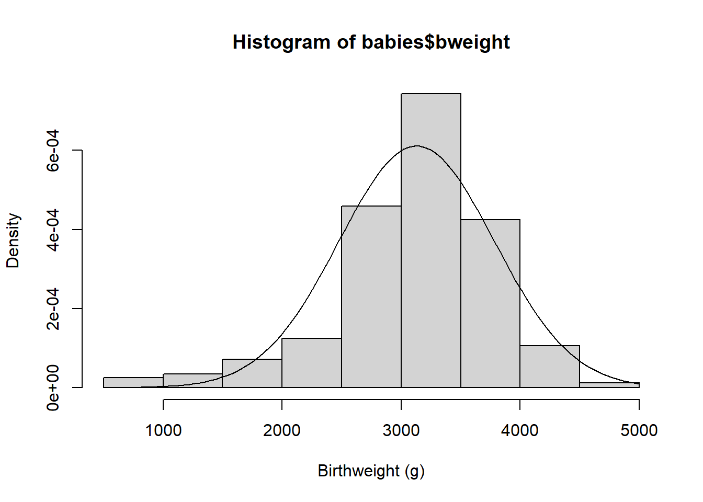
Examine the variable gestwks in the same way.
summary(babies$gestwks) Min. 1st Qu. Median Mean 3rd Qu. Max.
24.69 38.01 39.15 38.69 40.15 42.35 hist(babies$gestwks, xlab = "Weeks gestation", freq = FALSE)
curve(dnorm(x, mean = mean(babies$gestwks), sd = sd(babies$gestwks)), add = TRUE)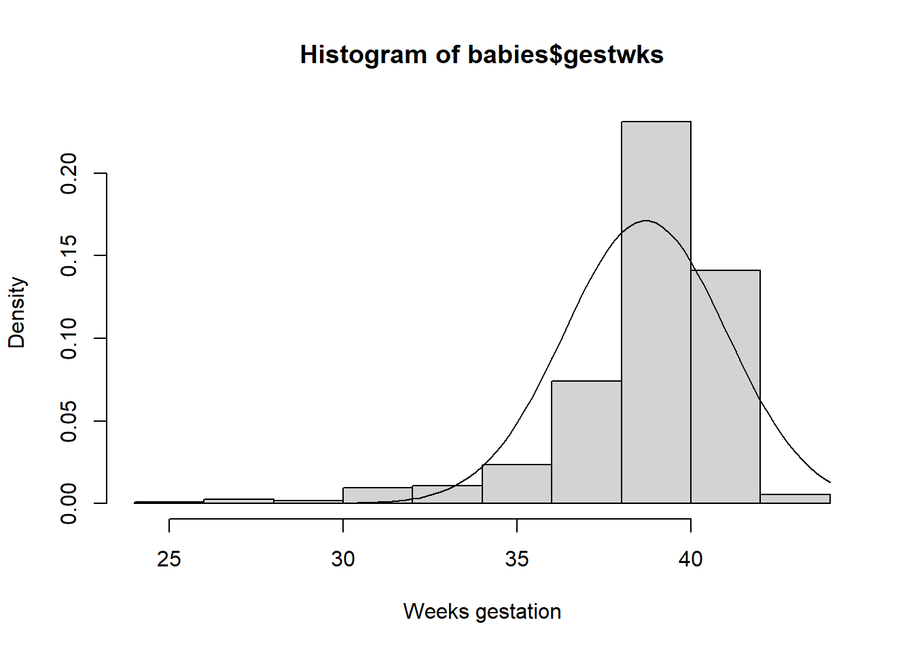
Scatterplot
The first step in examining the relationship between two quantitative variables is to draw a scatterplot.
plot(babies$gestwks, babies$bweight)Do you think there is an association between birthweight and weeks of gestation? From the scatterplot we can see that as weeks of gestation increases birthweight increases.
We can measure the degree of linear association with a correlation coefficient. To do this in R type:
cor(babies[, c("bweight", "gestwks")]) bweight gestwks
bweight 1.0000000 0.7375501
gestwks 0.7375501 1.0000000The correlation coefficient without the matrix can also be obtained
cor(babies$bweight, babies$gestwks)[1] 0.7375501The correlation coefficient for the association between birthweight and weeks of gestation is r = 0.74, indicating a positive linear association.
Correlation tells us about the strength of the association between two variables but if one variable is dependent on the other we can quantify the relationship with linear regression. The linear relationship can be expressed as
\[ bweight= a + b \times gestwks \]
\[ y= a + b \times x \]
The parameters a and b (the intercept and the slope of the regression line) are estimated with the lm() function which estimates a linear model. To see the results we have to save the model as an object in out R environment.
model <- lm(bweight ~ gestwks, data=babies)Notice the response variable goes first, with the explanatory variable after the tilde symbol (~)
We can then see the results of the model by typing
summary(model)
Call:
lm(formula = bweight ~ gestwks, data = babies)
Residuals:
Min 1Q Median 3Q Max
-1810.15 -284.69 -6.97 283.06 1248.31
Coefficients:
Estimate Std. Error t value Pr(>|t|)
(Intercept) -4865.245 290.081 -16.77 <2e-16 ***
gestwks 206.641 7.485 27.61 <2e-16 ***
---
Signif. codes: 0 '***' 0.001 '**' 0.01 '*' 0.05 '.' 0.1 ' ' 1
Residual standard error: 441.2 on 639 degrees of freedom
Multiple R-squared: 0.544, Adjusted R-squared: 0.5433
F-statistic: 762.3 on 1 and 639 DF, p-value: < 2.2e-16The output shows the model coefficients and standard errors, along with hypothesis tests, some model statistics and a summary of the distribution of the model residuals. To see confidence intervals for coefficients we can type:
confint(model) 2.5 % 97.5 %
(Intercept) -5434.8731 -4295.6172
gestwks 191.9439 221.3386To see only the coefficients we can type:
coef(model)(Intercept) gestwks
-4865.2452 206.6412 In the model
\[ bweight = a + b \times gestwks \]
the value of a is given by the coefficient for (Intercept) = -4865.245
the value of b is given by the coefficient for gestwks = 206.641
You can now write down the regression equation.
\[ bweight = -4865.2 + 206.6 \times gestwks \]
You can examine the output for evidence of a linear relationship between birthweight and weeks of gestation. The regression coefficient has a value of 206.6 meaning that for a unit increase in weeks of gestation, birthweight increases on average by 206.6 grams. The associated 95 % confidence interval is (191.9, 221.3) meaning that in the population represented by this sample we are 95% certain that the regression coefficient lies within this range. A t-test of the null hypothesis of no linear association between birthweight and weeks of gestation (ie that b, the regression coefficient is equal to 0) gives a value of t=27.61 (P<0.0001). We conclude that there is very strong evidence to suggest a linear association between weeks of gestation and birthweight.
The results of the model are stored in a list object. One of the elements of this list is called fitted.values and it contains predicted values of birthweight for each individual in the babies dataset, based on their weeks of gestation. We can add this to the dataset using the mutate() function
babies <- babies |>
mutate(y = model$fitted.values)Here we have chosen y to be the name of the variable containing the predicted values.
Include these predicted values in the plot() and lines() functions to plot the regression line with the scatterplot.
plot(babies$gestwks, babies$bweight)
lines(babies$gestwks, babies$y)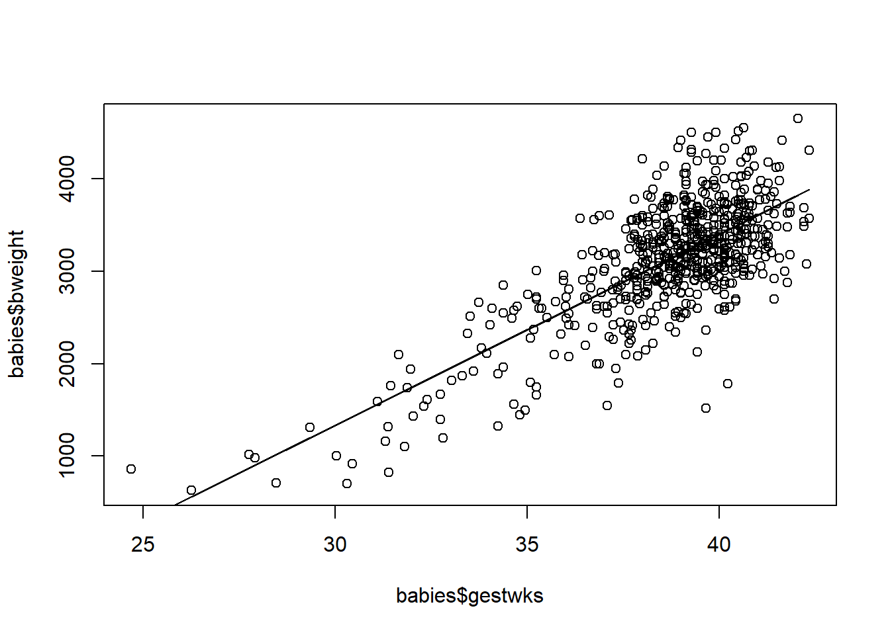
Alternatively, we can plot the model over the scatterplot directly using abline()
plot(babies$gestwks, babies$bweight)
abline(model)Now using the Babies dataset answer the following questions (the solutions are in Section 3).
In this session you are going to use the non-parametric methods described in the CAL session SE15. They are:
The Wilcoxon signed rank test for the analysis of a single sample
The Wilcoxon rank sum test for the analysis of two independent samples
The Wilcoxon signed rank test for the analysis of two paired samples
The Spearman’s correlation coefficient for the association between two variables observed in one sample
Load the packages required for this session
library(rio)
library(tidyverse)To illustrate the use of the Wilcoxon signed rank test for a single sample we will look at the data set called chol1.csv (see Appendix). This consists of information on the cholesterol level (in mg/dl) of 34 middle-age men. We wish to examine its distribution and to test whether the population median is equal to 196.5mg/dl, that is the average cholesterol in the Whitehall study.
Import the cholesterol data.
cholesterol <- import("chol1.csv")Summarise the distribution of the variable chol
cholesterol |>
summarise(mean = mean(chol), median = median(chol), min = min(chol), max = max(chol)) mean median min max
1 208.5588 200 100 330Or just:
summary(cholesterol$chol) Min. 1st Qu. Median Mean 3rd Qu. Max.
100.0 170.5 200.0 208.6 250.5 330.0 Examining the distribution of cholesterol you will find that its median is 200mg/dl and its mean is 208.6mg/dl. The distribution can be plotted with the command:
hist(cholesterol$chol, breaks = seq(100, 350, by = 25))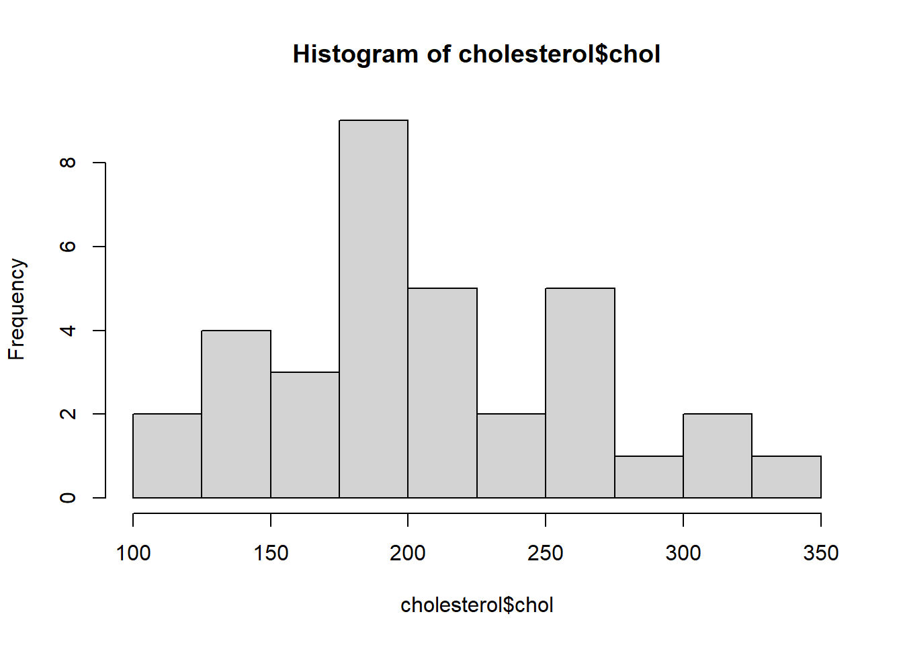
It is moderately skewed to the right (there is a hint of a long tail to the right of the distribution) so, to test whether the median in the population is 196.5mg/dl, we use the Wilcoxon signed rank test with the command,
wilcox.test(cholesterol$chol, mu = 196.5, exact = FALSE)
Wilcoxon signed rank test with continuity correction
data: cholesterol$chol
V = 357, p-value = 0.3131
alternative hypothesis: true location is not equal to 196.5To illustrate the use of the Wilcoxon rank sum test for the analysis of two independent samples we will examine the dataset called bus.csv (see Appendix). This is the file holding the data on energy consumption of bus drivers and office workers described in SE15.
The variables in the data file are energy (measured in Kcal/day) and job (coded 1 for “bus driver”, 2 for “office worker”). Import the data and tabulate the median energy intake by job.
bus <- import("bus.csv")bus |>
group_by(job) |>
summarise(freq=n(), mean = mean(energy), median = median(energy))# A tibble: 3 × 4
job freq mean median
<int> <int> <dbl> <dbl>
1 1 10 2915. 2871.
2 2 7 2423. 2343.
3 NA 1 NA NA To test whether the two groups have the same average energy consumption we use the Wilcoxon rank sum test with the command,
wilcox.test(bus$energy ~ bus$job)
Wilcoxon rank sum exact test
data: bus$energy by bus$job
W = 58, p-value = 0.02499
alternative hypothesis: true location shift is not equal to 0The p-value of 0.025 suggests there is some evidence of a difference in energy consumption between the two groups.
To illustrate the use of the Wilcoxon signed rank test for the analysis of two paired samples we will examine the dataset called Diabk.csv (see Appendix 1). This holds the calories intake of 15 diabetic patients measured one week before and one week after an intervention to improve their diet. We noted in the exercises in WB08 that the differences in paired measurements were not symmetrically distributed, as the mean and median differ.
diabk <- import("diabk.csv")diabk <- diabk |>
mutate(dif=kcal1-kcal2)diabk |>
summarise(mean = mean(dif),
median = median(dif),
min = min(dif),
max = max(dif)) mean median min max
1 78.8 119 -335 320The Wilcoxon signed rank test for the median difference being equal to zero is found with the command:
wilcox.test(diabk$dif, mu=0)
Wilcoxon signed rank exact test
data: diabk$dif
V = 83, p-value = 0.2078
alternative hypothesis: true location is not equal to 0or alternatively
wilcox.test(diabk$kcal1, diabk$kcal2, paired=TRUE)
Wilcoxon signed rank exact test
data: diabk$kcal1 and diabk$kcal2
V = 83, p-value = 0.2078
alternative hypothesis: true location shift is not equal to 0The result shows there is no significant difference between the paired measurements (P=0.21).
To illustrate the use of the Spearman’s correlation coefficient we use the systolic blood pressure and cholesterol level measured in the Whitehall civil servants. Import the data and plot the two variables against each other.
whitehall <- import("whall10.csv")plot(whitehall$chol, whitehall$sbp)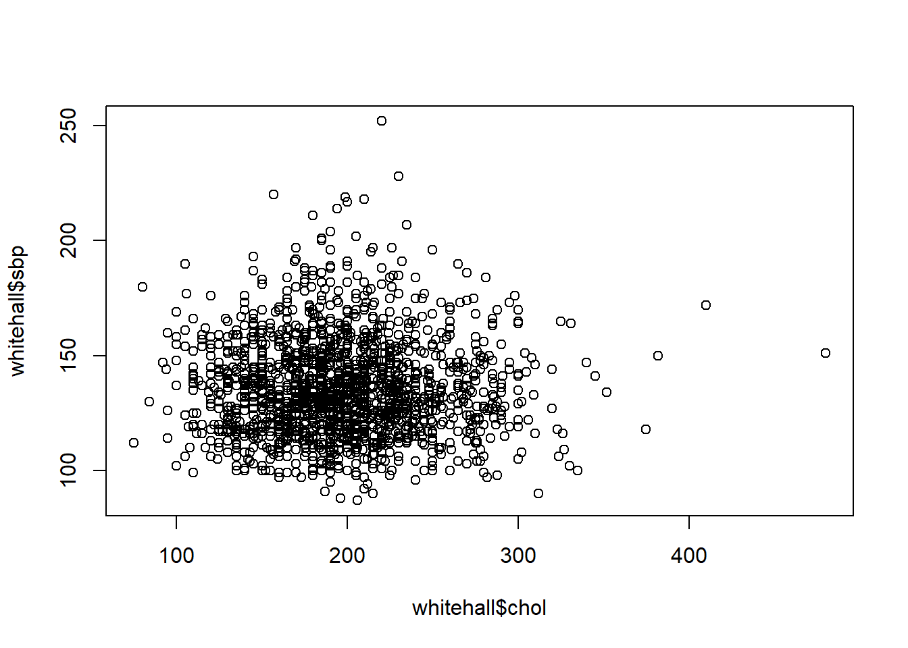
Then calculate the Spearman’s coefficient.
cor(whitehall$sbp, whitehall$chol, method = "spearman")[1] -0.0004221175There is no evidence to suggest a correlation between these two variables.
Have a go on your own now (the solutions are in Section 3).
Now you are going to use R to obtain sample size calculations. In doing this you will apply the statistical methods introduced in SE16.
You do not need to use a dataset in this session.
We are going to start by considering how to use R to obtain a sample size calculation when we are interested in comparing two proportion – as outlined in the study material for SE16. The CAL material describes the hand calculation of the required sample size for the comparison of 2 proportions. We considered a trial of insecticide impregnated bednets, in which we are interested in the prevalence of enlarged spleen in the treatment group compared with that in the intervention group. Previous data indicated that we should expect a prevalence of enlarged spleen of 40%. We wished to calculate a sample size necessary to detect a prevalence of 20% in the treatment group. We don’t need to calculate the difference in proportions this time.
power.prop.test(p1 = 0.4, p2 = 0.2, power = 0.9)
Two-sample comparison of proportions power calculation
n = 108.2355
p1 = 0.4
p2 = 0.2
sig.level = 0.05
power = 0.9
alternative = two.sided
NOTE: n is number in *each* groupAs previously we can vary the parameters in the above command. For example, if we wish to detect a prevalence of 35% in the treatment group (a drop of only 5%) we would use the following command:
power.prop.test(p1 = 0.4, p2 = 0.35, power = 0.9)
Two-sample comparison of proportions power calculation
n = 1968.064
p1 = 0.4
p2 = 0.35
sig.level = 0.05
power = 0.9
alternative = two.sided
NOTE: n is number in *each* groupNote that because we now wish to detect a far smaller difference, a larger sample size is required.
At the start of this practical session, we considered how to conduct a sample size calculation when comparing two proportions in a clinical trial of insecticide-impregnated bednets. We can also use the same sample size formulae when we are designing a case-control study In the CAL material we discussed a case-control study comparing method of infant feeding (bottle or breast) amongst cases of death from acute respiratory infection, and controls. We wished to detect a minimum 2-fold increase in death associated with bottle-feeding, compared to infants who were breast-fed, that is an Odds Ratio of 2.
From reading previously published work we know that the percentage of bottle-fed controls is around 40%. The command power.prop.test() uses the following arguments:
n : number of observations (per group)
p1 : probability or proportion in one group
p2 : probability or proportion in other group
sig.level : significance level (Type I error probability)
power : power of test (1 minus Type II error probability)All but one of the arguments must be specified, and the left over argument will be calculated. sig.level defaults to 0.05.
We have an odds ratio of interest (2) but not a different in proportions which is what is needed for this function. We need to use our odds ratio and our proportion to calculate the effect size we are interested in.
Our proportion 0.4 can be rewritten as 4/10
We can then convert this to odds by subtracting 4 (the top number) from the bottom number: 4/(10-4)=4/6
We want to detect a two fold increase in odds, so we can multiply this by 2: 4/6×2=8/6
Then to convert this back to a proportion, we add 8 (the top number) to the bottom number: 8/(6+8)=8/14
We can turn this calculation into our own function like this:
or2prop <- function(p1, or){
b <- (p1 * or) / (1 - p1 + p1 * or)
return(b)
}The function is called or2prop. It uses the arguments p1 (first proportion) and or (odds ratio of interest) to calculate p2. We can run it to do the calculation for us
or2prop(0.4, 2)[1] 0.5714286We use this number as our second proportion in our power calculation using the function power.prop.test()
power.prop.test(p1 = 0.4, p2 = 0.5714286, power = 0.9)
Two-sample comparison of proportions power calculation
n = 176.5397
p1 = 0.4
p2 = 0.5714286
sig.level = 0.05
power = 0.9
alternative = two.sided
NOTE: n is number in *each* groupYou will notice that this value is slightly smaller than that calculated by hand in SC17 6.3. This is because in the hand calculated version we rounded the proportion of cases exposed (shown as p2 in the output here, but referred to as \(\pi\)_1 in the CAL material) to 0.57. Here R is using 0.5714286 as the proportion of exposed cases.
We may wish to alter some or all of the parameters, for example we may wish to calculate the sample size for 30% exposure among controls:
power.prop.test(p1 = 0.3, p2 = or2prop(0.3, 2), power = 0.9)
Two-sample comparison of proportions power calculation
n = 187.7983
p1 = 0.3
p2 = 0.4615385
sig.level = 0.05
power = 0.9
alternative = two.sided
NOTE: n is number in *each* groupWe may also wish to calculate the sample size for 80% power (rather than 90%), as follows:
power.prop.test(p1 = 0.4, p2 = or2prop(0.4, 2), power = 0.8)
Two-sample comparison of proportions power calculation
n = 132.2459
p1 = 0.4
p2 = 0.5714286
sig.level = 0.05
power = 0.8
alternative = two.sided
NOTE: n is number in *each* groupA larger difference will result in a smaller minimum sample size, for example
power.prop.test(p1 = 0.4, p2 = or2prop(0.4, 3), power = 0.8)
Two-sample comparison of proportions power calculation
n = 53.74794
p1 = 0.4
p2 = 0.6666667
sig.level = 0.05
power = 0.8
alternative = two.sided
NOTE: n is number in *each* groupWe will now consider how to use R to obtain the sample size calculation demonstrated in SC17 section 6.7. In the CAL material we discussed a trial comparing mean Packed Cell Volume (PCV) between those randomised to either insecticide impregnated bednet (intervention) or no bednet (control). We expected a mean PCV of 33 in the control group, with a standard deviation of 5. We wish to detect a difference of 1.5 in the PCV between the treatment and control group i.e. we expect those randomised to impregnated bednets to have a PCV of 34.5. We expect a standard deviation in this group of 5, there is no reason to expect any difference in variation.
power.t.test(delta = 1.5, sd = 5, power = 0.9, type = "two.sample")
Two-sample t test power calculation
n = 234.4628
delta = 1.5
sd = 5
sig.level = 0.05
power = 0.9
alternative = two.sided
NOTE: n is number in *each* groupHere, we require a sample size of 235 per group (compared with 234 calculated by hand in the CAL material)
Again we can change any parameters. The default significance level is 5%, if this is the required level it does not have to be explicitly specified in the command. The sig.level argument may be used to specify a different level of significance, for example:
power.t.test(delta = 1.5, sd = 5, power = 0.9, sig.level = 0.01, type = "two.sample")
Two-sample t test power calculation
n = 332.316
delta = 1.5
sd = 5
sig.level = 0.01
power = 0.9
alternative = two.sided
NOTE: n is number in *each* groupNote that the actual means do not affect the sample size, it is the size of their difference that counts so it does not matter that we do not explicitly specify them. So we could put in any values for the 2 means, providing they have a difference of 1.5.
We will use the example given in SC17 section 7.1 of the EPM102 CAL material, in which the power is calculated for the study design described in SC17 section 6.2. We know that the percentage of controls exposed to bottle-feeding (the exposure) is 40% and wish to detect a minimum Odds Ratio of 2. Our previous calculations indicated that with 90% power and 5% significance level the minimum required sample size was 179.5 per group i.e. 180 cases and 180 controls.
Again, we use the power command, with our own function or2prop. Note that we specify the sample size for each group, rather than overall.
power.prop.test(p1 = 0.4, p2 = or2prop(0.4, 2), n = 180)
Two-sample comparison of proportions power calculation
n = 180
p1 = 0.4
p2 = 0.5714286
sig.level = 0.05
power = 0.9054847
alternative = two.sided
NOTE: n is number in *each* groupSimilarly we may use the power command to determine the power to detect a specified difference between the means of 2 samples, with known SD. For the earlier example comparing mean PCV between the group receiving impregnated bednets and the control group, we wished to detect a minimum difference of 1.5, with standard deviation 5 in each group. Our previous calculations indicated that with 90% power and 5% significance level the minimum required sample size was 235 participants per group.
We would type the following in R:
power.t.test(delta = 1.5, sd = 5, n = 235, type = "two.sample")
Two-sample t test power calculation
n = 235
delta = 1.5
sd = 5
sig.level = 0.05
power = 0.9006524
alternative = two.sided
NOTE: n is number in *each* groupReassuringly we find that the power in both examples is around 90%, which is what we would have expected, since earlier calculations in this practical obtained sample sizes based on a fixed power of 90%.
Now use R to obtain the following sample size calculations.
| Exposure level among control | 5% | 10 | 40% | 80% |
|---|---|---|---|---|
| OR=0.5 | ||||
| OR=1.5 | ||||
| OR=2 | 177 | 348 | ||
| OR=3 |
Prevalence among treatment group = 40%, significance level = 5%
| Prevalence of disease expected in treatment group | 10% | 20% | 30% | 35% |
|---|---|---|---|---|
| Power = 80% | ||||
| Power = 90% | 109 | 1969 | ||
| Power = 95% |
| Clinically important difference in blood test result | 0.5 | 1 | 1.5 | 2 |
|---|---|---|---|---|
| Significance=5% | ||||
| Significance=1% | 160 | 42 |
Using R, determine the power to detect a difference of at least 0.05 between 2 proportions, in a sample size of 600 individuals per group.
Load packages required for this session.
library(rio)
library(tidyverse)
library(gmodels)Import the babies data.
babies <- import("babies.csv")Initially we can try looking at the class of all the variables
babies |>
summarise_all(class) id matage hyp gestwks sex bweight
1 integer integer integer numeric integer integerUnfortunately, these are all numeric so this doesn’t tell us much. Instead we can have a look at the data
head(babies, 10) id matage hyp gestwks sex bweight
1 1 33 2 37.74 1 2410
2 2 34 2 39.15 1 2977
3 3 34 2 35.72 1 2100
4 4 30 2 39.29 2 3270
5 5 35 2 38.38 1 2620
6 6 37 2 37.86 2 3260
7 7 31 2 40.06 2 3750
8 8 31 1 34.81 1 1450
9 9 33 1 38.81 2 3200
10 10 33 2 40.35 1 3675This shows us the first ten rows of the data. We can see that matage, gestwks and bweight seem to be numeric, while sex and hyp are binary.
table(babies$sex, useNA = "ifany")
1 2
315 326 We know from appendix 1 that a value of 1 represents male sex, so there are 315 male infants ii) How many mothers were hypertensive during pregnancy?
table(babies$hyp)
1 2
89 552 In appendix 1, a value of 1 means hypertension, so there were 89 hypertensive motherstable(babies$hyp, babies$sex)
1 2
1 37 52
2 278 274There were 37 male infants born to hypertensive mothers 4. Produce a table to answer the following question. i) What percentage of male infants were born to hypertensive mothers?
CrossTable(
babies$sex,
babies$hyp,
prop.r = TRUE,
prop.c = FALSE,
prop.t = FALSE,
prop.chisq = FALSE)
Cell Contents
|-------------------------|
| N |
| N / Row Total |
|-------------------------|
Total Observations in Table: 641
| babies$hyp
babies$sex | 1 | 2 | Row Total |
-------------|-----------|-----------|-----------|
1 | 37 | 278 | 315 |
| 0.117 | 0.883 | 0.491 |
-------------|-----------|-----------|-----------|
2 | 52 | 274 | 326 |
| 0.160 | 0.840 | 0.509 |
-------------|-----------|-----------|-----------|
Column Total | 89 | 552 | 641 |
-------------|-----------|-----------|-----------|
11.7% of male infants were born to hypertensive mothers
babies |>
select(bweight, matage, gestwks) |>
summarise(across(everything(),
list(
mean = ~ mean(.x, na.rm = TRUE),
med = ~ median(.x, na.rm = TRUE),
sd = ~ sd(.x, na.rm = TRUE)
))) bweight_mean bweight_med bweight_sd matage_mean matage_med matage_sd
1 3129.137 3200 652.7827 33.97192 34 3.87046
gestwks_mean gestwks_med gestwks_sd
1 38.68725 39.15 2.329931hist(babies$bweight)
Birthweight seems fairly normally distributed, perhaps with a longer lower tail B. maternal age?
hist(babies$matage)
Maternal age also seems fairly normally distributed
C. gestational age? hist(babies$gestwks)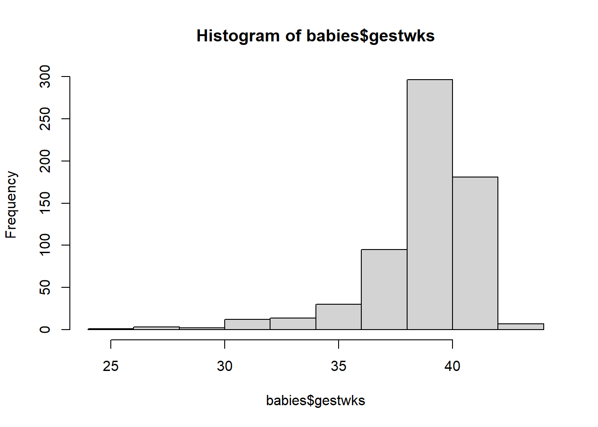
This is a skewed distributionplot(babies$gestwks, babies$bweight)Load packages required for this session.
library(rio)
library(tidyverse)whitehall <- import("whall10.csv")nrow(whitehall)[1] 1677whitehall |>
select(id, sbp, chol) |>
summarise(across(everything(),
list(missing = ~ sum(is.na(.))))) id_missing sbp_missing chol_missing
1 0 0 0There are 1677 records in the dataset and no missing values of id, sbp or chol
mean(whitehall$sbp)[1] 135.8223t.test(whitehall$sbp)$conf.int[1] 134.8158 136.8288
attr(,"conf.level")
[1] 0.95The sample mean systolic blood pressure is 135.82mmHg, with corresponding 95% confidence interval 134.82mmHg to 136.83mmHg
hist(whitehall$sbp)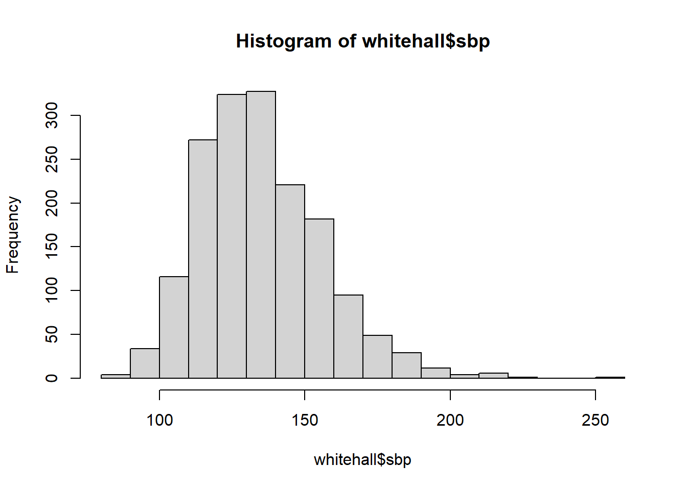
Looks reasonably symmetrical, so use of the mean is appropriate in this case.
mean(whitehall$chol)[1] 196.5391t.test(whitehall$chol)$conf.int[1] 194.3302 198.7479
attr(,"conf.level")
[1] 0.95The sample mean cholesterol level is 196.54mg/dl, with corresponding 95% confidence interval 194.33mg/dl to 198.75mg/dl
hist(whitehall$chol)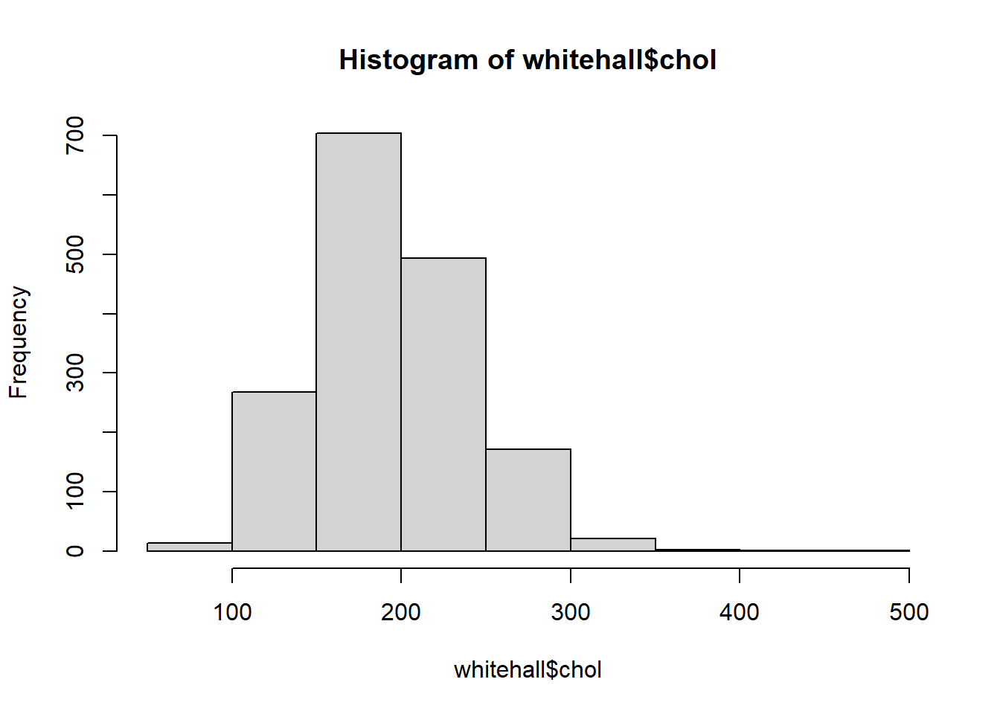
Again, looks reasonably symmetrical, so appropriate to use the mean.
t.test(whitehall$sbp, mu = 135)
One Sample t-test
data: whitehall$sbp
t = 1.6024, df = 1676, p-value = 0.1093
alternative hypothesis: true mean is not equal to 135
95 percent confidence interval:
134.8158 136.8288
sample estimates:
mean of x
135.8223 Reporting and Interpretation
There is little evidence against the null hypothesis that mean systolic blood pressure in this population is equal to 135mmHg (p=0.1093). A sample mean of this size, or larger, is likely to occur by chance, in a population with mean 135mmHg.
t.test(whitehall$chol, mu=190)
One Sample t-test
data: whitehall$chol
t = 5.8065, df = 1676, p-value = 7.615e-09
alternative hypothesis: true mean is not equal to 190
95 percent confidence interval:
194.3302 198.7479
sample estimates:
mean of x
196.5391 Reporting and interpretation
There is very strong evidence against the null hypothesis that the mean cholesterol level in the population is equal to 190mg/dl (p<0.0001). A mean this different from 190mg/dl is very unlikely to have occurred by chance alone.
Load packages required for this session.
library(rio)
library(tidyverse)diabk <- import("diabk.csv")summary(diabk) id kcal1 kcal2
Min. : 1.0 Min. :1233 Min. :1323
1st Qu.: 4.5 1st Qu.:1722 1st Qu.:1636
Median : 8.0 Median :1910 Median :1775
Mean : 8.0 Mean :1862 Mean :1783
3rd Qu.:11.5 3rd Qu.:2108 3rd Qu.:1895
Max. :15.0 Max. :2159 Max. :2391 diabk <- diabk|>
mutate(dif = kcal2 - kcal1)
hist(diabk$dif)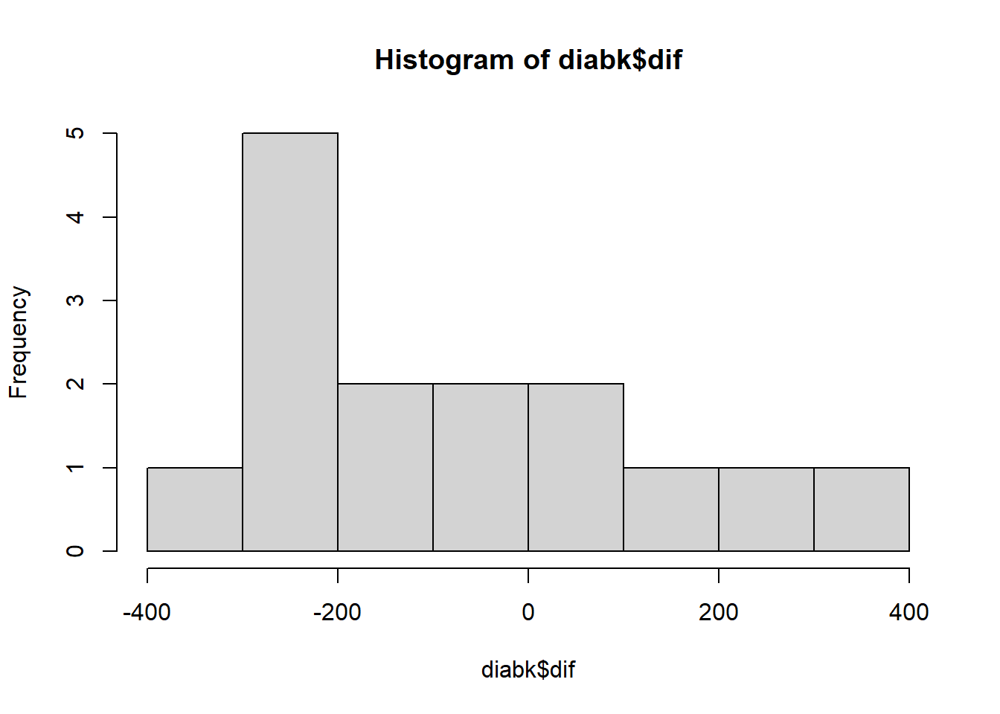
The histogram shows that the distribution is skewed
Let’s proceed, but keep in mind that the assumption of a symmetrical distribution is not really satisfied. We will use these data again in WB16.
t.test(diabk$dif)
One Sample t-test
data: diabk$dif
t = -1.4684, df = 14, p-value = 0.1641
alternative hypothesis: true mean is not equal to 0
95 percent confidence interval:
-193.90042 36.30042
sample estimates:
mean of x
-78.8 The sample mean difference is 78.8 kcal/day, that is the average daily calorie intake is 78.8 kcal/day lower following the intervention. The associated 95% confidence interval is -36.30 kcal/day to 193.90 kcal/day. That is we are 95% certain that, in the population, the average change in daily intake is between 36 kcal/day higher than before intervention and 193.90 kcal/day lower than before intervention. A t-test suggests little/no evidence against the null hypothesis of no difference in intake following intervention (p=0.1641). The p-value is greater than 0.05 and so is supported by the 95% confidence interval which includes 0, the value under the null hypothesis.
Alternatively, the paired t-test can be conducted using the following command:
t.test(diabk$kcal1, diabk$kcal2, paired = TRUE)
Paired t-test
data: diabk$kcal1 and diabk$kcal2
t = 1.4684, df = 14, p-value = 0.1641
alternative hypothesis: true mean difference is not equal to 0
95 percent confidence interval:
-36.30042 193.90042
sample estimates:
mean difference
78.8 Note that paired test results are the same as those from the one-sample result carried out on the difference variable. (Results are only comparable in the case of paired data. We would be unable to calculate a “difference” variable in the case of unpaired data)
babies <- import("babies.csv")
babies |>
group_by(hyp) |>
summarise(mean = mean(bweight))# A tibble: 2 × 2
hyp mean
<int> <dbl>
1 1 2742.
2 2 3192.t.test(babies$bweight ~ babies$hyp)
Welch Two Sample t-test
data: babies$bweight by babies$hyp
t = -4.9991, df = 104.07, p-value = 2.341e-06
alternative hypothesis: true difference in means between group 1 and group 2 is not equal to 0
95 percent confidence interval:
-627.6273 -271.1197
sample estimates:
mean in group 1 mean in group 2
2742.157 3191.531 Here the two variables in the t.test() call are separated by “~” in order to group the bweight by the hypertension status.
Mean birthweights of babies born to hypertensive and non-hypertensive mothers were 2742.2g and 3191.5g respectively. In this sample babies born to hypertensive mothers weighed on average 449.4g less than babies born to non-hypertensive mothers. We are 95% certain that, in the population represented by these mothers the mean difference in birthweight between babies born to non-hypertensive mothers and babies born to hypertensive mothers is between 627.63 and 271.12g.
A t-test show strong evidence against the null hypothesis of no difference in birthweight between the 2 groups, with P<0.0001
Load packages required for this session.
library(rio)
library(tidyverse)
library(gmodels)
library(DescTools)mwanza <- import("mwanza.csv")table(mwanza$pa1)
1 2 3 4 9
74 598 63 26 2 mwanza <- mwanza |>
mutate(
npa2 = case_when(
pa1 %in% 1:2 ~ 0,
pa1 %in% 3:4 ~ 1,
pa1 == 9 ~ NA_real_
)
)table(mwanza$npa2, mwanza$pa1, useNA = "always")
1 2 3 4 9 <NA>
0 74 598 0 0 0 0
1 0 0 63 26 0 0
<NA> 0 0 0 0 2 0table(mwanza$npa2, mwanza$case)
0 1
0 517 155
1 56 33prop.table(table(mwanza$npa2, mwanza$case),2)
0 1
0 0.90226876 0.82446809
1 0.09773124 0.17553191chisq.test(mwanza$npa2, mwanza$case, correct = FALSE)
Pearson's Chi-squared test
data: mwanza$npa2 and mwanza$case
X-squared = 8.2967, df = 1, p-value = 0.003972The percentage of cases with 2 or more partners is twice that for controls (17.55% compared to 9.77%). P=0.004 means that we have strong evidence against the null hypothesis of no association between HIV infection and number of sexual partners in the last year, in this population of women.
OddsRatio(table(mwanza$case, mwanza$npa2),
conf.level = 0.95
)odds ratio lwr.ci upr.ci
1.965553 1.233315 3.132531 The Odds Ratio when the exposure of interest is 2 or more sexual partners is 1.97 (95% CI 1.23 to 3.14), suggesting that HIV infection is more likely among those with 2 or more sexual partners than those with 1 or no sexual partners.
mwanza <- mwanza |>
mutate(
ed2 = case_when(
ed == 1 ~ 0,
ed %in% 2:4 ~ 1
)
)table(mwanza$ed, mwanza$ed2)
0 1
1 312 0
2 0 75
3 0 365
4 0 11Ed2 is coded correctly
mantelhaen.test(mwanza$case, mwanza$npa2, mwanza$ed2)
Mantel-Haenszel chi-squared test with continuity correction
data: mwanza$case and mwanza$npa2 and mwanza$ed2
Mantel-Haenszel X-squared = 5.8258, df = 1, p-value = 0.01579
alternative hypothesis: true common odds ratio is not equal to 1
95 percent confidence interval:
1.159982 3.033112
sample estimates:
common odds ratio
1.875728 OddsRatio(table(mwanza$case[mwanza$ed2 == 0],
mwanza$npa2[mwanza$ed2 == 0]),
conf.level = 0.95)odds ratio lwr.ci upr.ci
0.38625205 0.08864065 1.68309510 OddsRatio(table(mwanza$case[mwanza$ed2 == 1],
mwanza$npa2[mwanza$ed2 == 1]),
conf.level = 0.95)odds ratio lwr.ci upr.ci
2.688580 1.553003 4.654507 The effect of exposure to 2 or more partners upon HIV infection is greater among women with education compared to women with no education: In women with no education, for exposure to 2 or more partners, OR=0.39. In women with education, for exposure to 2 or more partners, OR = 2.69. The results in each stratum are very different and so the ORS should be presented separately
Load packages required for this session.
library(rio)
library(tidyverse)
library(gmodels)
library(DescTools)diabraz <- import("diabraz.csv")
pairdata <- diabraz |>
select(case, bwtgp, pair) |>
spread(value = bwtgp, key = case) |>
rename(bwtgp1 = `0`, bwtgp2 = `1`)
table(pairdata$bwtgp1, pairdata$bwtgp2)
1 2
1 31 25
2 18 12Alternatively, the table can be obtained with CrossTable()
CrossTable(pairdata$bwtgp1, pairdata$bwtgp2,
prop.c = FALSE,
prop.chisq = FALSE,
prop.r = FALSE,
prop.t = FALSE)
Cell Contents
|-------------------------|
| N |
|-------------------------|
Total Observations in Table: 86
| pairdata$bwtgp2
pairdata$bwtgp1 | 1 | 2 | Row Total |
----------------|-----------|-----------|-----------|
1 | 31 | 25 | 56 |
----------------|-----------|-----------|-----------|
2 | 18 | 12 | 30 |
----------------|-----------|-----------|-----------|
Column Total | 49 | 37 | 86 |
----------------|-----------|-----------|-----------|
18 pairs where the case is >=3kg and the control < 3kg
25 pairs where the control is >=3kg and the case is < 3kg
25 / 18[1] 1.388889mantelhaen.test(diabraz$bwtgp, diabraz$case, diabraz$pair, correct = FALSE)
Mantel-Haenszel chi-squared test without continuity correction
data: diabraz$bwtgp and diabraz$case and diabraz$pair
Mantel-Haenszel X-squared = 1.1395, df = 1, p-value = 0.2858
alternative hypothesis: true common odds ratio is not equal to 1
95 percent confidence interval:
0.7577807 2.5456075
sample estimates:
common odds ratio
1.388889 The OR takes a value of 1.39 (95% CI 0.76, 2.55) which suggests that low birthweight leads to an increased risk of diarrhoea mortality - but p = 0.29, so there is no evidence against the null hypothesis, ie no evidence of an association between birthweight and diarrhoea mortality in the population from which this sample was selected. In addition note that 1.0 the value of OR under the null hypothesis, is included in the 95% confidence interval.
pairdata <- diabraz |>
select(case, wat2, pair) |>
spread(value = wat2, key = case) |>
rename(wat1 = `0`, wat2 = `1`)
table(pairdata$wat1, pairdata$wat2)
1 2
1 56 11
2 2 17Or using CrossTable()
CrossTable(pairdata$wat1, pairdata$wat2,
prop.c = FALSE,
prop.chisq = FALSE,
prop.r = FALSE,
prop.t = FALSE)
Cell Contents
|-------------------------|
| N |
|-------------------------|
Total Observations in Table: 86
| pairdata$wat2
pairdata$wat1 | 1 | 2 | Row Total |
--------------|-----------|-----------|-----------|
1 | 56 | 11 | 67 |
--------------|-----------|-----------|-----------|
2 | 2 | 17 | 19 |
--------------|-----------|-----------|-----------|
Column Total | 58 | 28 | 86 |
--------------|-----------|-----------|-----------|
Two pairs where the case has access to water and the control does not
11 pairs where the control has access to water and the case does not
11 / 2[1] 5.5mantelhaen.test(diabraz$wat2, diabraz$case, diabraz$pair, correct = FALSE)
Mantel-Haenszel chi-squared test without continuity correction
data: diabraz$wat2 and diabraz$case and diabraz$pair
Mantel-Haenszel X-squared = 6.2308, df = 1, p-value = 0.01255
alternative hypothesis: true common odds ratio is not equal to 1
95 percent confidence interval:
1.219099 24.813414
sample estimates:
common odds ratio
5.5 The odds ratio of 5.5 suggests that there is a strong association between water supply and diarrhoea mortality, this is supported by the associated p-value of 0.013, providing evidence against the null hypothesis of no association. Note also that the value under the null hypothesis of OR=1 is excluded from the 95% confidence interval.
This is the odds ratio of being a case associated with no private water supply.
OddsRatio(table(diabraz$wat2, diabraz$case),
conf.level = 0.95
)odds ratio lwr.ci upr.ci
1.7023593 0.8620992 3.3615938 Ignoring the matching, the effect of access to water on the risk of diarrhoea mortality is greatly underestimated, with an OR of only 1.70
Load packages required for this session.
library(rio)
library(tidyverse)
library(gmodels)
library(DescTools)babies<-import("babies.csv")
babies|>
summarise(mean = mean(matage),
median = median(matage),
min = min(matage),
max = max(matage)) mean median min max
1 33.97192 34 23 43hist(babies$matage)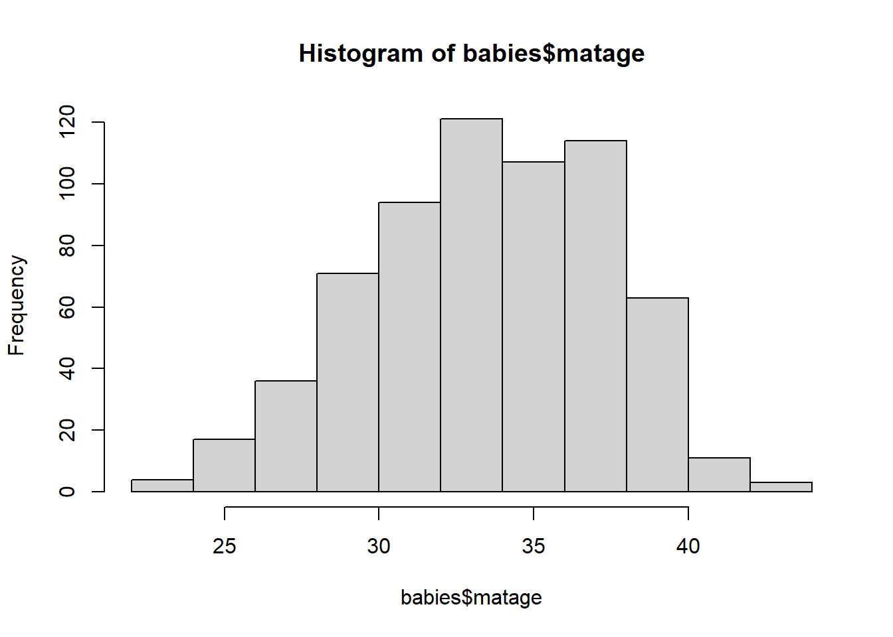
mean (33.97 years) and median (34 years) approximately equal – Normal Distribution
plot(babies$matage, babies$bweight)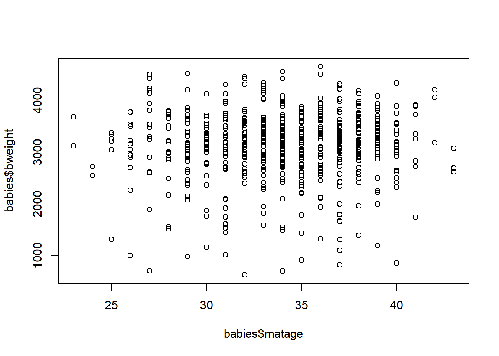
The scatterplot of birthweight against maternal age suggests there is no association (linear or otherwise) between the 2 variables.
cor(babies[, c("bweight", "matage")]) bweight matage
bweight 1.00000000 0.03371573
matage 0.03371573 1.00000000The correlation coefficient r=0.0337 suggests there is virtually no linear association between birthweight and maternal age. (Although note that we should also look at a scatter plot to look for non-linear associations. In this case there does not appear to be any).
model <- lm(bweight~matage, data = babies)
summary(model)
Call:
lm(formula = bweight ~ matage, data = babies)
Residuals:
Min 1Q Median 3Q Max
-2487.92 -283.61 67.76 413.64 1509.33
Coefficients:
Estimate Std. Error t value Pr(>|t|)
(Intercept) 2935.959 227.995 12.877 <2e-16 ***
matage 5.686 6.668 0.853 0.394
---
Signif. codes: 0 '***' 0.001 '**' 0.01 '*' 0.05 '.' 0.1 ' ' 1
Residual standard error: 652.9 on 639 degrees of freedom
Multiple R-squared: 0.001137, Adjusted R-squared: -0.0004264
F-statistic: 0.7272 on 1 and 639 DF, p-value: 0.3941confint(model) 2.5 % 97.5 %
(Intercept) 2488.249353 3383.66837
matage -7.407819 18.78065The regression equation is as follows:
\[ birthweight=2935+5.69 \times \text{maternal age in years} \]
The value of the regression coefficient is 5.69. It means that for an increase of a year in maternal age, birthweight increases on average by 5.69 grams. The 95% confidence interval for the regression coefficient is -7.41 to 18.78, thus we are 95% certain the population value lies within these limits. Note that the value of 0 is included within these limits. A test of significance tests the null hypothesis that the regression coefficient is equal to zero - the resulting t-statistic has a value of 0.85 with corresponding P value of 0.394. We conclude there is no evidence against the null hypothesis.
plot(babies$matage,
babies$bweight,
xlab = "Maternal age (years)",
ylab = "Birthweight"
)
abline(model)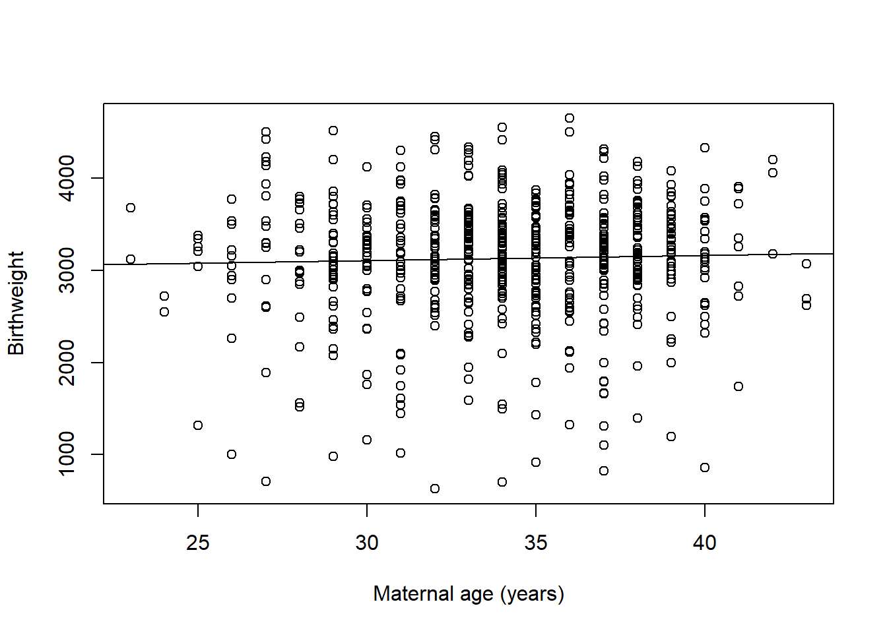
Strictly speaking, a linear regression analysis is not an appropriate method of investigation on these data, as there appears to be no linear association between maternal age and birthweight (See SC15 P6 of CAL material for list of assumptions for linear regression). If you continue on to EPM202, you will learn ways to test for non-linear associations, e.g. quadratic terms and turning quantitative measures into categorical measures.”
Load packages required for this session.
library(rio)
library(tidyverse)whitehall<-import("whall10.csv")median(whitehall$sbp)[1] 133wilcox.test(whitehall$sbp, mu = 120)
Wilcoxon signed rank test with continuity correction
data: whitehall$sbp
V = 1162721, p-value < 2.2e-16
alternative hypothesis: true location is not equal to 120As p is very small, we have evidence to reject the null hypothesis that the population median is 120mmHg. Note the calculations involve very large numbers when the sample size is this large
2.Compare the cholesterol levels of High and Low grade civil servants using a parametric and then a non-parametric method.
whitehall|>
group_by(grade)|>
summarise(mean=mean(chol), median=median(chol))# A tibble: 2 × 3
grade mean median
<int> <dbl> <dbl>
1 1 197. 192
2 2 195. 193Parametric
t.test(whitehall$chol~whitehall$grade)
Welch Two Sample t-test
data: whitehall$chol by whitehall$grade
t = 0.89, df = 867.28, p-value = 0.3737
alternative hypothesis: true difference in means between group 1 and group 2 is not equal to 0
95 percent confidence interval:
-2.703512 7.189638
sample estimates:
mean in group 1 mean in group 2
197.1851 194.9420 Non-parametric
wilcox.test(whitehall$chol ~ whitehall$grade)
Wilcoxon rank sum test with continuity correction
data: whitehall$chol by whitehall$grade
W = 297668, p-value = 0.2994
alternative hypothesis: true location shift is not equal to 0The results from parametric and non-parametric tests are in agreement: p> 0.20. We accept the null hypothesis that the men in the 2 employment grades have similar cholesterol distributions.
skinf<-import("skinf.csv")wilcox.test(skinf$skin1, skinf$skin2, paired=TRUE)
Wilcoxon signed rank exact test
data: skinf$skin1 and skinf$skin2
V = 110, p-value = 0.002625
alternative hypothesis: true location shift is not equal to 0p < 0.01 so we conclude there is strong evidence against the null hypothesis that the difference between skin measurements has a median equal to zero.
babies<-import("babies.csv")plot(babies$matage, babies$gestwks)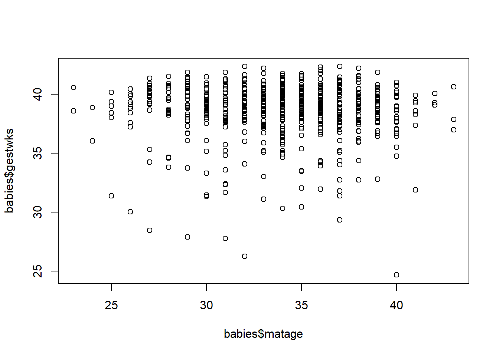
cor(babies$matage, babies$gestwks, method="spearman")[1] -0.02143943There does not appear to be an association between gestational age and maternal age.
| Exposure level among controls | 5% | 10% | 40% | 80% |
|---|---|---|---|---|
| OR=0.5 | 1287 | 659 | 203 | 230 |
| OR=1.5 | 2261 | 1219 | 519 | 913 |
| OR=2 | 690 | 378 | 177 | 348 |
| OR=3 | 236 | 133 | 72 | 164 |
Example R output, where OR = 0.5 and level of exposure among controls = 5%, using the function `or2prop() from practical 17.
power.prop.test(p1=0.05, p2=or2prop(0.05, 0.5), power=0.9)
Two-sample comparison of proportions power calculation
n = 1286.74
p1 = 0.05
p2 = 0.02564103
sig.level = 0.05
power = 0.9
alternative = two.sided
NOTE: n is number in *each* group| Prevalence of disease expected in treatment group | 10% | 20% | 30% | 35% |
|---|---|---|---|---|
| Power=80% | 32 | 82 | 356 | 1471 |
| Power=90% | 42 | 109 | 477 | 1969 |
| Power=95% | 52 | 134 | 589 | 2434 |
Example R output, where prevalence of disease expected in treatment group = 10% and power = 80%
power.prop.test(p1=0.4, p2=0.1, power=0.8)
Two-sample comparison of proportions power calculation
n = 31.49838
p1 = 0.4
p2 = 0.1
sig.level = 0.05
power = 0.8
alternative = two.sided
NOTE: n is number in *each* group| Clinically important difference in blood test result | 0.5 | 1 | 1.5 | 2 |
|---|---|---|---|---|
| Significance=5% | 446 | 113 | 51 | 29 |
| Significance=1% | 632 | 160 | 72 | 42 |
Example R output, where the clinically important difference is 0.5 and power = 90%
power.t.test(delta=0.5, sd=2.3, power=0.9, type="two.sample")
Two-sample t test power calculation
n = 445.6367
delta = 0.5
sd = 2.3
sig.level = 0.05
power = 0.9
alternative = two.sided
NOTE: n is number in *each* grouppower.prop.test(p1=0.1, p2=0.15, n=600)
Two-sample comparison of proportions power calculation
n = 600
p1 = 0.1
p2 = 0.15
sig.level = 0.05
power = 0.7455465
alternative = two.sided
NOTE: n is number in *each* groupBabies study
The data in Babies refer to the records of 641 singleton births.
The main scientific question considered was the effect of hypertension in the mother on birthweight of the baby. Other details that may affect birthweight were also recorded as shown below.
Bus drivers’ data
This dataset holds data on the average daily energy intake of bus drivers and office workers. The variables are:
Cholesterol data
This dataset holds data on the cholesterol level of 34 middle age men. The variables are:
Diabetics’ data
This dataset holds data on 15 diabetics who were involved in an educational programme to improve their diet. Their average daily calories intake was measured one week before and one week after the intervention.
The variables are:
Case control study of risk factors for infant deaths from diarrhoea
An attempt was made to ascertain all infant deaths from diarrhoea occurring over a one year period in two cities in southern Brazil, by means of weekly visits to all hospitals, coroners’ services and death registries in the cities.
Whenever the underlying cause of death was considered to be diarrhoea, a physician visited the parents or guardians to collect further information about the terminal illness, and data on possible risk factors. The same data were collected for control infants. Controls were the nearest neighbour aged less than 1 year. The procedure was designed to provide a control group with a similar age and socioeconomic distribution to that of the cases.
Cases and controls with important perinatal risk factors were excluded from the study as follows: birthweight<1500g; twins; major malformation or cerebral palsy; initial hospital stay>15 days. Also excluded were cases and controls under 7 days, as there were very few diarrhoea deaths in this age group.
Care was taken to collect a history of the feeding mode both at the time of death and prior to the onset of illness, to allow for the possibility that the illness may have resulted in a change in feeding practice. For the controls, feeding information was collected for the same dates as their matched cases.
Case control study of risk factors for HIV in women, Mwanza, Tanzania.
As part of a prospective study of the impact of STD control on the incidence of HIV infection in Mwanza, Tanzania, a baseline survey of HIV prevalence was carried out in 12 communities. All seropositive women (15 years and above) were revisited and, where possible) interviewed about potential risk factors for HIV infection using a standard questionnaire. In addition to interviewing HIV +ve women, a random sample of HIV -ve women were selected from the population lists prepared during the baseline survey and these women were also revisited and, where possible, interviewed. No matching of controls with cases was performed.
Resting metabolic rate data
This dataset holds data on weight and resting metabolic rate for 44 women aged 35 - 45 years. The variables are:
Skinfold data
This dataset holds data on 15 subjects for whom skinfold measurements were taken in two occasions, during the harvest and the planting season. The variables are:
Cohort study of risk factors for mortality in an occupational cohort.
Data on risk factors for coronary heart disease (CHD) were collected between 1967-69 for a total of 19,183 male civil servants from various departments around Whitehall (London). The data were collected by self-administered questionnaire and a screening examination. Survey participants were identified and flagged at the National Health Service Central Registry and a coded copy of the death certificate provided for each subsequent death. The data in whall10.csv refers to a 10% sample of the complete records in the full study. Below the names of the variables and their coding is listed.